<!doctype html>
<html lang="en">
<head>
  <meta charset="utf-8">
  <meta name="viewport" content="width=device-width, initial-scale=1">
  <title>arxiv digest — 2026-10-02</title>
  <style>
:root {
  --bg: #ffffff;
  --fg: #1f2328;
  --muted: #59636e;
  --border: #d0d7de;
  --card: #f6f8fa;
  --link: #0969da;
}
body {
  max-width: 980px;
  margin: 0 auto;
  padding: 2rem 1rem 5rem;
  font-family: -apple-system, BlinkMacSystemFont, "Segoe UI", Helvetica, Arial, sans-serif;
  line-height: 1.55;
  color: var(--fg);
  background: var(--bg);
}
a { color: var(--link); }
img { max-width: 100%; height: auto; }
pre, code { background: var(--card); border-radius: 6px; }
pre { padding: 1rem; overflow-x: auto; }
blockquote { border-left: 4px solid var(--border); padding-left: 1rem; color: var(--muted); }
details { margin: 0.6rem 0; }
summary { cursor: pointer; font-weight: 600; }
.paper-figures-scroll {
  display: flex;
  gap: 1rem;
  overflow-x: auto;
  overscroll-behavior-x: contain;
  padding: 0.75rem 0.25rem 1rem;
  margin: 1rem 0 1.25rem;
  border-top: 1px solid var(--border);
  border-bottom: 1px solid var(--border);
  scroll-snap-type: x proximity;
}
.paper-figure-card {
  flex: 0 0 min(260px, 72vw);
  scroll-snap-align: start;
  background: var(--card);
  border: 1px solid var(--border);
  border-radius: 12px;
  padding: 0.55rem;
}
.paper-figure-card img {
  display: block;
  width: 100%;
  max-height: 240px;
  object-fit: contain;
  background: white;
  border-radius: 8px;
}
.paper-figure-caption {
  display: block;
  margin-top: 0.5rem;
  color: var(--muted);
  font-size: 0.85rem;
}
.figure-strip-hint {
  color: var(--muted);
  font-size: 0.9rem;
  margin-bottom: -0.3rem;
}
</style>
  <!-- MathJax: renders $...$ inline math and $$...$$ display math, plus
       \(...\) and \[...\]. Loaded from the official CDN; works offline
       once cached. Configured to skip code/pre blocks so arxiv IDs that
       look like dollar amounts don't get mangled. -->
  <script>
    window.MathJax = {
      tex: {
        inlineMath: [['$', '$'], ['\\(', '\\)']],
        displayMath: [['$$', '$$'], ['\\[', '\\]']],
        processEscapes: true,
        processEnvironments: true
      },
      options: {
        skipHtmlTags: ['script', 'noscript', 'style', 'textarea', 'pre', 'code'],
        ignoreHtmlClass: 'tex2jax_ignore',
        processHtmlClass: 'tex2jax_process'
      }
    };
  </script>
  <script id="MathJax-script" async
    src="https://cdn.jsdelivr.net/npm/mathjax@3/es5/tex-chtml.js"></script>
</head>
<body>
<header style="background-color: #333; color: white; padding: 15px; margin-bottom: 20px;">
  <h1 style="margin: 0; font-size: 24px;">
    <a href="https://ochelpan.github.io/arXiv_clean/" style="color: white; text-decoration: none;">Main</a>
  </h1>
</header>

<h1>Daily arXiv Report</h1>

<hr>
<p>
<a href="index.html">← Index</a>
 · <a href="papers_07.html">← Previous</a> · <a href="papers_09.html">Next →</a>
</p>
<hr>

<h2>Papers 141–160</h2>
<p><a id="paper-2609.40036"></a></p>
<h3 id="cycle-codes-and-decoded-quantum-interferometry"><a href="http://arxiv.org/abs/2609.40036v1">Cycle Codes and Decoded Quantum Interferometry</a></h3>
<p><strong>Authors:</strong> Anuj Apte, Shouvanik Chakrabarti, Andi Gu, Stephen P. Jordan, Ojas Parekh, Ruslan Shaydulin, Jacob Watkins, Noureldin Yosri, Adam Zalcman<br>
<strong>Type:</strong> theory · <strong>Category:</strong> other · <strong>PDF:</strong> <a href="https://arxiv.org/pdf/2609.40036v1">https://arxiv.org/pdf/2609.40036v1</a><br>
<strong>Analysis basis:</strong> full PDF text, analyzed in chunks
<strong>Topic relevance:</strong> <code>quantum measurements</code> <strong>2/5</strong></p>
<div class="figure-strip-hint">↔ Scroll figures horizontally</div>
<div class="paper-figures-scroll">
<figure class="paper-figure-card">
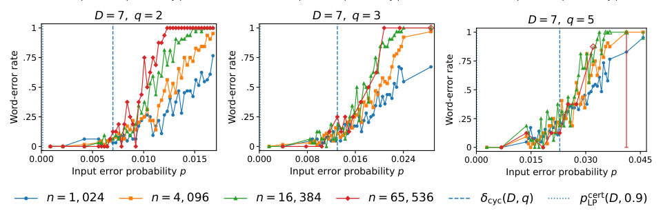
<figcaption class="paper-figure-caption"><b>Fig 1.</b> Figure 1: LP word-error rates on Linial–Simkin graphs with c = 0.9 and m = Dn/2 symbols. Each curve uses eight graphs. For q = 2, 3, 5, respectively, the sample counts per noise level are 64, 64, 64 at n = 1024; 64, 64, 32 at n = 4096; 32, 32, 16 at n = 16384; and 16, 8, 8 at n = 65536. The dashed lines mark the ML cycle upper bound (78); the dotted lines mark the certified LP rate (85). Open symbols distinguish complete fresh-object solves from the standard runs. Vertical intervals span the possible full-sample word-error rates when some solves time out; they are not statistical error bars. Curves are not continued through such points.</figcaption>
</figure>
<figure class="paper-figure-card">
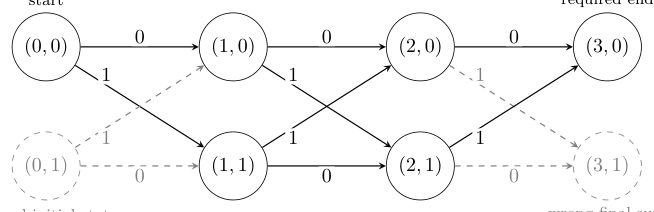
<figcaption class="paper-figure-caption"><b>Fig 2.</b> Figure 2: Full trellis for b1 + b2 + b3 = 0 over F2. An edge label gives the chosen symbol value, and (i, z) records the running sum after i choices. The table lists all four paths from the required start to the required end. Dashed nodes and edges are included in the full construction but lie on no such path; they carry zero flow in the LP. Crossings of edges are not nodes.</figcaption>
</figure>
</div>

<p><strong>Summary.</strong> This work analyzes Decoded Quantum Interferometry (DQI) applied to optimization problems modeled by cycle codes. The authors derive rigorous bounds on DQI's achievable performance by studying decoding guarantees for these codes over finite fields. The results constrain the potential quantum advantage by establishing performance limits based on classical decoding capabilities.</p>
<p><strong>Why it may be interesting.</strong> While the core topic is coding theory applied to optimization, the rigorous analysis of error thresholds and recovery bounds using advanced mathematical tools (LP, random walks) is highly relevant to understanding the limits of quantum error correction and quantum computation feasibility.</p>
<details>
<summary>Detailed structure</summary>
<p><strong>Main problem.</strong> The paper investigates the performance limits of Decoded Quantum Interferometry (DQI) when applied to solving optimization problems constrained by cycle codes.</p>
<p><strong>Main result.</strong> The analysis establishes upper and lower bounds on the approximate optima achievable by DQI using classical decoders, ruling out quantum advantage in the analyzed regimes but identifying specific instances where a nontrivial guarantee exists.</p>
<p><strong>Method.</strong> The authors derive satisfaction guarantees by analyzing the decoding process for homological cycle codes over finite fields, employing techniques like Linear Programming (LP) formulations and bounding interference terms.</p>
<p><strong>Model / system.</strong> The model centers on cycle codes, which reduce optimization problems like MaxCut to decoding problems. The analysis is performed over arbitrary finite fields $\mathbb{F}_q$ and utilizes the Linial–Simkin ensemble of regular graphs.</p>
<p><strong>Key observables.</strong> Satisfaction fraction guarantee, reliability threshold ($\delta_{\text{rel}}$), and the minimum-weight decoding complexity.</p>
<p><strong>Important parameters / regimes.</strong> Field size $q$, graph degree $D$, error probability $p$, and the girth of the underlying graph.</p>
<p><strong>Assumptions / limitations.</strong> The initial 'no-go' results relied on minimum distance assumptions that underestimate true DQI performance; the analysis also assumes deterministic syndrome-consistent mappings.</p>
<p><strong>Figures summary.</strong> The notes mention Table 1 comparing binary vs. non-binary cycle codes, and Table 2 comparing algorithmic performance metrics for different decoding techniques.</p>
<p><strong>Paper structure.</strong> The paper progresses by first establishing the problem context (DQI and cycle codes), then deriving general satisfaction guarantees under imperfect decoding, followed by detailed analysis of ML decoding bounds using Fourier transforms, and concluding with LP formulations and trellis constructions to prove recovery guarantees.</p>
</details>
<details>
<summary>Abstract</summary>
<p>Decoded Quantum Interferometry (DQI) reduces optimization problems with two-variable constraints to decoding cycle codes. For one such problem, namely MaxCut, prior work showed that DQI achieves a nontrivial satisfaction fraction guarantee only on linear-girth graphs, for which MaxCut is classically easy. However, these no-go results rely on minimum distance assumptions that do not represent true decodability thresholds for common noise channels, thus underestimating actual DQI performance. To estimate the true performance, we derive DQI satisfaction guarantees in the presence of imperfect decoding for fixed instances and generalize prior results for random instances. We then study homological cycle codes over arbitrary finite fields, and show that minimum-weight decoding is NP-hard for every field of size $q>2$, in contrast with known results for binary cycle codes. On the Linial--Simkin ensemble of regular graphs with logarithmic girth, we prove maximum-likelihood recovery bounds and a strong converse for a family of non-uniform additive noise channels. Moreover, LP decoders provide polynomial-time recovery of a positive fraction of randomly located errors with arbitrary values. These results allow us to prove upper and lower bounds on the approximate optima achievable by DQI when restricted to classical decoders. These bounds rule out quantum advantage in the regimes we analyze but also identify a family of regular Max-$k$-Cut instances on which DQI efficiently achieves a nontrivial satisfaction fraction guarantee.</p>
</details>
<p><sub><a href="#top">↑ back to top</a></sub></p>

<p><a id="paper-2609.38720"></a></p>
<h3 id="does-the-readout-bypass-leak-the-input-a-feature-visibility-audit-of-hybrid-quantum-classical-models"><a href="http://arxiv.org/abs/2609.38720v1">Does the Readout Bypass Leak the Input? A Feature-Visibility Audit of Hybrid Quantum-Classical Models</a></h3>
<p><strong>Authors:</strong> Guilin Zhang, Kai Zhao, Xiquan Cui, Henry Heng, Xu Chu, Aletta Johanna Blanken<br>
<strong>Type:</strong> theory · <strong>Category:</strong> disordered systems and neural networks · <strong>PDF:</strong> <a href="https://arxiv.org/pdf/2609.38720v1">https://arxiv.org/pdf/2609.38720v1</a><br>
<strong>Analysis basis:</strong> full PDF text, analyzed in chunks
<strong>Topic relevance:</strong> <code>quantum measurements</code> <strong>2/5</strong></p>
<div class="figure-strip-hint">↔ Scroll figures horizontally</div>
<div class="paper-figures-scroll">
<figure class="paper-figure-card">
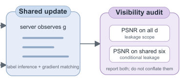
<figcaption class="paper-figure-caption"><b>Fig 1.</b> Figure 1: Visibility-conditioned audit. Quantum-only heads receive the first six coordinates, while input-only and residual heads receive the full record. We therefore report reconstruction over both the full vector and the six coordinates shared by all quantum models.</figcaption>
</figure>
</div>

<p><strong>Summary.</strong> This work provides a privacy audit for hybrid quantum-classical models, demonstrating that the readout mechanism leaks raw input data through standard linear layer vulnerabilities. The authors show that simply appending quantum features does not guarantee privacy protection against gradient-based reconstruction attacks. This highlights that the leakage stems from the classical readout structure rather than the quantum processing itself.</p>
<p><strong>Why it may be interesting.</strong> While focused on ML privacy, the underlying concept of analyzing information leakage through complex, non-linear quantum feature maps relates to understanding the information capacity and robustness of quantum representations.</p>
<details>
<summary>Detailed structure</summary>
<p><strong>Main problem.</strong> The paper audits the privacy leakage when raw classical inputs are concatenated with measured quantum features in readout-side residual hybrid Quantum Machine Learning (QML) models.</p>
<p><strong>Main result.</strong> The readout bypass mechanism leaks raw input coordinates because the initial linear layer is analytically vulnerable, regardless of the quantum circuit's complexity.</p>
<p><strong>Method.</strong> The authors use gradient matching attacks and reconstruction metrics (PSNR, MSE) to quantify how well raw inputs can be recovered from the model's gradients.</p>
<p><strong>Model / system.</strong> The model is a readout-side residual hybrid QML architecture where the readout vector $z$ is formed by concatenating raw input $x$ and measured quantum features $Q(x)$.</p>
<p><strong>Key observables.</strong> PSNR (Peak Signal-to-Noise Ratio) for reconstruction, Membership Inference Attack (MIA) AUC, and reconstruction fidelity across full-vector vs. shared-six coordinates.</p>
<p><strong>Important parameters / regimes.</strong> The analysis is limited to specific six-input, six-observable circuits and individual gradient leakage, not aggregation.</p>
<p><strong>Assumptions / limitations.</strong> The findings are specific to the tested small datasets and circuit structures, and the leakage is attributed to the linear layer's analytic vulnerability.</p>
<p><strong>Figures summary.</strong> Figures illustrate the visibility-conditioned audit setup, comparing reconstruction performance across different feature sets and architectures.</p>
<p><strong>Paper structure.</strong> The paper establishes the model setup, details the gradient matching attack methodology, presents quantitative results comparing different architectural leakage levels (Residual vs. Input-only), and concludes with a privacy audit framework.</p>
</details>
<details>
<summary>Abstract</summary>
<p>Readout-side residual hybrids concatenate raw inputs with measured quantum features. Under single-example gradient sharing, a biased first linear layer admits standard analytic recovery of its input, so the bypass exposes raw coordinates without requiring inversion of the quantum circuit. We audit this mechanism using two tabular datasets, four architectures, and metrics conditioned on feature visibility. Iterative gradient matching gives median full-record PSNR of 73-96 dB for residual and input-only heads. Quantum-only heads score 8-11 dB on the full record but 54-96 dB on the six input coordinates they actually encode. These are reconstruction results for the tested six-input, six-observable circuits, not a general statement about quantum encodings. A loss-threshold membership attack remains near chance. The contribution is a visibility-conditioned privacy audit: omitted coordinates must not be credited as protection supplied by quantum processing, and near-exact PSNR differences must not be interpreted as meaningful privacy rankings. Our findings concern individual gradients and do not establish leakage under aggregation or multiple local training steps.</p>
</details>
<p><sub><a href="#top">↑ back to top</a></sub></p>

<p><a id="paper-2609.39941"></a></p>
<h3 id="fast-and-sure-ious-quantum-process-tomography"><a href="http://arxiv.org/abs/2609.39941v1">Fast and Sure-ious Quantum Process Tomography</a></h3>
<p><strong>Authors:</strong> A. Afham, Sayantan Sen, Marco Tomamichel<br>
<strong>Type:</strong> theory · <strong>Category:</strong> quantum information and computing · <strong>PDF:</strong> <a href="https://arxiv.org/pdf/2609.39941v1">https://arxiv.org/pdf/2609.39941v1</a><br>
<strong>Analysis basis:</strong> full PDF text, analyzed in chunks
<strong>Topic relevance:</strong> <code>quantum measurements</code> <strong>2/5</strong></p>
<div class="figure-strip-hint">↔ Scroll figures horizontally</div>
<div class="paper-figures-scroll">
<figure class="paper-figure-card">
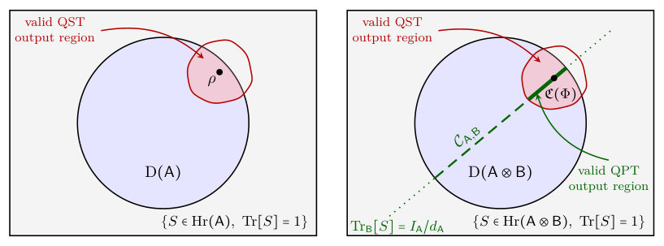
<figcaption class="paper-figure-caption"><b>Fig 1.</b> Figure 1: From state to process tomography. Left, QST: inside the affine space of Hermitian trace-one matrices (rectangle) lies the set of density matrices D(A) (disc). A QST protocol returns an estimate in a small neigh- borhood (red outline) of the true state ρ intersected with density matrices (shaded region). Right, QPT on the bipartite space A ⊗B: the matrices whose A-marginal is maximally mixed form an affine subspace through the maximally mixed state IAB/dAB (green line, dotted outside D(A⊗B)), and its intersection with D(A⊗B) (dashed chord) is the set CA,B of Choi states of channels. A lifted QPT protocol must regularize a QST output to CA,B.</figcaption>
</figure>
<figure class="paper-figure-card">
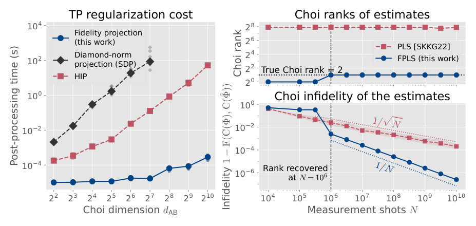
<figcaption class="paper-figure-caption"><b>Fig 2.</b> Figure 2: (Left) Runtime of different TP regularization methods against Choi dimension: the iterative Hyper- plane Intersection Projection (“HIP”) [SKKG22], our fidelity projection (theorem 5), and the diamond-distance projection SDP [MB26]. All three regularize the same instance, the QST output obtained from a Haar-random isometry. The SDP curve is the solver’s own solve time, which understates its cost (Appendix D.1). (Right) Recovered Choi rank and Choi infidelity with the true channel, for Fidelity Projected Least Squares (FPLS, this work) against PLS [SKKG22], both applied to the same least-squares estimate of a rank-2 channel at dAB = 28. The dashed line at N = 106 marks the...</figcaption>
</figure>
<figure class="paper-figure-card">
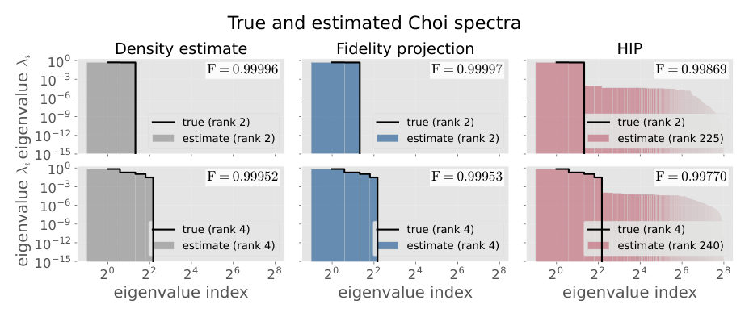
<figcaption class="paper-figure-caption"><b>Fig 3.</b> Figure 3: Rank preservation in practice, at dAB = 28. Top row: the rank-2 channel of Fig. 2; bottom row: independent amplitude damping on two of the four qubits, Choi rank 4; both at N = 108. Left: ordered spectrum of the density estimate, Algorithm 3 at τ = βN/2, which corresponds to a CP but not TP map. Middle and right: the channel estimates obtained by TP regularizing this same density estimate with fidelity projection and with HIP. The black line marks the true eigenvalues, the bars those of the estimate, and the inset F is the fidelity of the estimate with the true Choi state.</figcaption>
</figure>
<figure class="paper-figure-card">
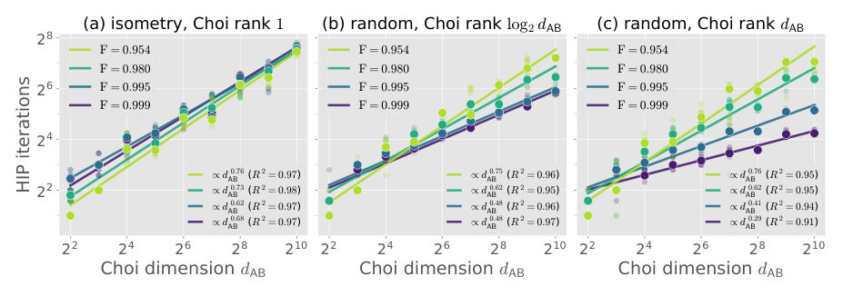
<figcaption class="paper-figure-caption"><b>Fig 4.</b> Figure 4: Iterations required by HIP [SKKG22], run as described in Appendix D.1, against Choi dimension, every instance calibrated approximately to a common fidelity F from CA,B, at four levels colored from dark (closest to CA,B) to light (farthest) and labeled by the corresponding fidelity. True channels are (a) a Haar-random isometry, Choi rank 1, and (b), (c) random channels of Choi rank log2 dAB and dAB, a Wishart matrix normalized by its input marginal [BCSŻ09]; ten measurement draws each. Translucent markers are single instances, opaque markers their median. Solid lines are log–log power-law fits to the medians.</figcaption>
</figure>
<figure class="paper-figure-card">
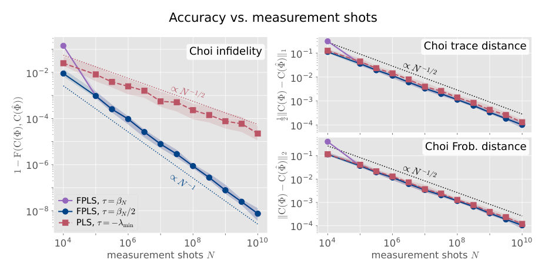
<figcaption class="paper-figure-caption"><b>Fig 5.</b> Figure 5: Reconstruction accuracy against the shot count for a rank-2 channel of Fig. 2 at dAB = 28, one panel per metric. FPLS at the Bernstein threshold τ = βN (purple) and at βN/2 (blue) against PLS at τ = −λmin (red); geometric means and [min, max] bands over 10 trials. The dotted guides carry N −1/2 and N −1 with fixed, never fitted exponents, drawn as in Fig. 2 (Appendix D.2).</figcaption>
</figure>
</div>

<p><strong>Summary.</strong> This paper develops a theoretically rigorous and computationally efficient method for Quantum Process Tomography (QPT). It proves that a simple, closed-form partial normalization heuristic is mathematically equivalent to the optimal fidelity projection onto the set of physical quantum channels. This breakthrough allows QPT algorithms to inherit the favorable sample complexity guarantees of state tomography while avoiding the computational bottlenecks of traditional semidefinite programming methods.</p>
<p><strong>Why it may be interesting.</strong> This work provides a computationally tractable and theoretically sound method for characterizing open quantum systems (channels), which is fundamental for quantum process characterization in quantum computing and quantum optics.</p>
<details>
<summary>Detailed structure</summary>
<p><strong>Main problem.</strong> The paper addresses the challenge of Quantum Process Tomography (QPT), which requires estimating an unknown quantum channel while enforcing the trace-preserving (TP) constraint.</p>
<p><strong>Main result.</strong> The authors prove that the standard 'folklore partial normalization' heuristic is mathematically equivalent to the exact projection onto the set of valid Choi states using fidelity, allowing QST algorithms to be directly lifted to QPT with inherited sample complexity.</p>
<p><strong>Method.</strong> The core method involves establishing the mathematical equivalence between the partial normalization and the fidelity projection, enabling the use of closed-form, computationally efficient regularization techniques for QPT.</p>
<p><strong>Model / system.</strong> The system under study is an unknown quantum channel $\Phi: \mathcal{L}(A) 	o \mathcal{L}(B)$, which is characterized by its Choi state $C(\Phi)$. The estimation process involves reconstructing this state from measurement data.</p>
<p><strong>Key observables.</strong> Fidelity ($F$), Choi Rank, Sample Complexity ($N$), and computational runtime/memory usage.</p>
<p><strong>Important parameters / regimes.</strong> The dimension of the systems ($d_A, d_B$), the target infidelity ($\epsilon$), and the required number of channel uses ($N \propto 1/\epsilon$).</p>
<p><strong>Assumptions / limitations.</strong> The primary assumption is that the fidelity projection is the correct regularization method, which is shown to be equivalent to the partial normalization formula.</p>
<p><strong>Figures summary.</strong> Figures compare the runtime of various TP regularization methods (Fidelity projection vs. SDP vs. HIP) against Choi dimension, showing the fidelity projection is significantly faster. Other figures compare rank recovery and infidelity vs. shot count.</p>
<p><strong>Paper structure.</strong> The paper first establishes the theoretical equivalence between partial normalization and fidelity projection. It then applies this result to lift QST protocols to QPT, demonstrating improved performance over existing projection-based methods in terms of speed and accuracy.</p>
</details>
<details>
<summary>Abstract</summary>
<p>Quantum process tomography (QPT) protocols are often designed by lifting quantum state tomography (QST) protocols through the Choi-Jamiolkowski isomorphism, at the cost of an extra step enforcing the trace-preserving (TP) constraint. Existing approaches fall into two classes. The folklore partial normalization, which sandwiches the density estimate between inverse square roots of its input marginal, has a closed form but is used as a heuristic, its only analyses being asymptotic and losing a factor polynomial in the dimension. Projection-based methods are principled but have no closed forms and scale poorly with dimension. We resolve this dichotomy by showing that the partial normalization is the exact projection onto the Choi states of quantum channels in fidelity (equivalently in Bures or purified distance). Consequently, any QST algorithm with guarantees in fidelity lifts to a QPT algorithm that inherits its sample complexity, through a single closed-form congruence that preserves the Choi rank and is computed in Kraus form without any eigendecomposition of Choi dimension. We lift two single-copy protocols and prove that the non-adaptive one (Fidelity Projected Least Squares) recovers the Choi rank and reaches infidelity $\varepsilon$ from a number of channel uses proportional to $1/\varepsilon$. Numerically, for channels of low Choi rank, it improves on the state-of-the-art projected least squares in accuracy, and by orders of magnitude in the time and memory of the TP-regularization step and of the returned estimate.</p>
</details>
<p><sub><a href="#top">↑ back to top</a></sub></p>

<p><a id="paper-2609.40319"></a></p>
<h3 id="local-automorphism-aware-syndrome-compilation-for-general-quantum-ldpc-codes"><a href="http://arxiv.org/abs/2609.40319v1">Local Automorphism-Aware Syndrome Compilation for General Quantum LDPC Codes</a></h3>
<p><strong>Authors:</strong> Eugenio Durazo Rocha, Olai Å. Mostad, Hsuan-Yin Lin, Eirik Rosnes<br>
<strong>Type:</strong> theory · <strong>Category:</strong> quantum information and computing · <strong>PDF:</strong> <a href="https://arxiv.org/pdf/2609.40319v1">https://arxiv.org/pdf/2609.40319v1</a><br>
<strong>Analysis basis:</strong> full PDF text, analyzed in chunks
<strong>Topic relevance:</strong> <code>quantum measurements</code> <strong>2/5</strong></p>
<div class="figure-strip-hint">↔ Scroll figures horizontally</div>
<div class="paper-figures-scroll">
<figure class="paper-figure-card">
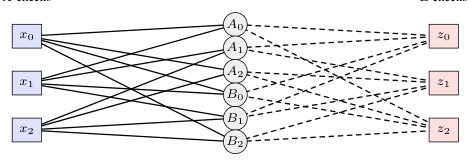
<figcaption class="paper-figure-caption"><b>Fig 1.</b> Fig. 1. The standard CSS Tanner graph of the [[6, 2, 2]] code in Example 1. Solid and dashed edges are incident on X- and Z-check vertices, respectively.</figcaption>
</figure>
<figure class="paper-figure-card">
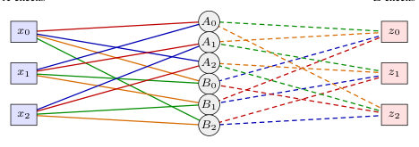
<figcaption class="paper-figure-caption"><b>Fig 2.</b> Fig. 2. A quantum-valid 4-edge coloring of the CSS Tanner graph in Fig. 1. Solid and dashed edges represent CX and CZ gates, respectively. Each color class is a perfect matching of size 6, and ηij(t) = 0 for every overlapping X/Z check pair.</figcaption>
</figure>
<figure class="paper-figure-card">
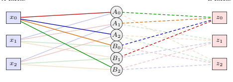
<figcaption class="paper-figure-caption"><b>Fig 3.</b> Fig. 3. The order-3 LocalASC reduction for the [[6, 2, 2]] code. The 8 saturated edges are orbit representatives and correspond to the tick variables of the orbit model. The remaining 16 edges are shown faintly, since all edges in the same orbit receive the same tick. Each monochromatic orbit contains 3 edges.</figcaption>
</figure>
<figure class="paper-figure-card">

<figcaption class="paper-figure-caption"><b>Fig 4.</b> Fig. 3 shows the corresponding orbit representation. Solving for one tick variable per orbit and lifting the resulting as- signment recovers the coloring in Fig. 2. Each of the 8 orbit variables determines the common tick assigned to the 3 Tanner edges in its orbit. Each color class in Fig. 2 is a perfect matching, and Example 2 verifies (C3) for all 9 overlapping check pairs. Therefore, the lifted coloring is quantum-valid.</figcaption>
</figure>
<figure class="paper-figure-card">
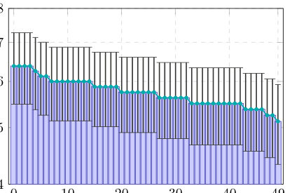
<figcaption class="paper-figure-caption"><b>Fig 5.</b> Fig. 4. LocalASC filtering with 50 steps for the [[48, 4, 8]] coset-based code with fixed seed for noise in memory at physical noise level p = 0.001.</figcaption>
</figure>
</div>

<p><strong>Summary.</strong> This paper introduces Local Automorphism-Aware Syndrome Compilation (LocalASC) to optimize the circuit depth required for syndrome extraction in quantum LDPC codes. By exploiting the symmetries (automorphisms) of the code's Tanner graph, LocalASC simplifies the complex scheduling constraints. This leads to the discovery of depth-optimal and lower-error-rate syndrome extraction schedules compared to prior state-of-the-art methods.</p>
<p><strong>Why it may be interesting.</strong> While focused on quantum error correction, the underlying mathematical machinery involving graph automorphisms, constraint satisfaction, and optimization techniques is highly relevant to designing efficient quantum circuits for any complex quantum system.</p>
<details>
<summary>Detailed structure</summary>
<p><strong>Main problem.</strong> The paper addresses the challenge of finding low-depth syndrome extraction circuits for general quantum LDPC codes.</p>
<p><strong>Main result.</strong> The proposed Local Automorphism-Aware Syndrome Compilation (LocalASC) method successfully finds depth-optimal syndrome-extraction schedules for several tested quantum codes, often outperforming existing compilation techniques.</p>
<p><strong>Method.</strong> LocalASC reduces the complex quantum-constrained edge coloring problem to edge-orbit variables by leveraging subgroups of the Tanner graph's automorphisms, simplifying the constraint system.</p>
<p><strong>Model / system.</strong> The work analyzes Calderbank-Shor-Steane (CSS) quantum LDPC codes, which are modeled using their associated Tanner graphs, incorporating constraints from X- and Z-check measurements.</p>
<p><strong>Key observables.</strong> Minimum two-qubit depth ($\lambda_{	ext{SEC}}^{\star}$), Logical Error Rate (LER), and Circuit Distance ($d_{circ}$).</p>
<p><strong>Important parameters / regimes.</strong> The maximum degree of the Tanner graph ($\Delta(G)$) serves as a key lower bound for the required depth.</p>
<p><strong>Assumptions / limitations.</strong> The method assumes the existence of appropriate automorphism subgroups ($H \leq 	ext{Aut}(G)$) to simplify the constraint system.</p>
<p><strong>Figures summary.</strong> Figures compare the performance (e.g., LER) of LocalASC against other scheduling methods for specific codes like [[48, 4, 8]] and [[72, 12, 6]], demonstrating superior performance.</p>
<p><strong>Paper structure.</strong> The paper first establishes the problem as a quantum-constrained edge coloring problem, introduces LocalASC by reducing constraints to edge orbits, and then validates its effectiveness by comparing its results against established methods and analyzing specific code families.</p>
</details>
<details>
<summary>Abstract</summary>
<p>Low-depth syndrome extraction for Calderbank-Shor-Steane (CSS) quantum low-density parity-check codes can be formulated as a proper ordered edge-coloring problem subject to quantum parity constraints. A proper edge-coloring of the CSS Tanner graph ensures that each data or ancilla qubit participates in at most one two-qubit gate per layer, but does not guarantee a valid interleaving of the X- and Z-check measurements as for every overlapping X/Z check pair, the number of shared data qubits on which the X interaction precedes the Z interaction must be even. The minimum number of colors in a proper ordered edge-coloring satisfying the quantum parity constraints equals the minimum two-qubit depth when each stabilizer check is measured with a single ancilla.   We introduce local automorphism-aware syndrome compilation (LocalASC), which reduces the constraint system to edge-orbit variables under a subgroup of the Tanner graph automorphisms and lifts each feasible orbit assignment to the full graph. Although the $6$-layer degree lower bound is unattainable for the published weight-$6$ IBM bivariate bicycle codes, we show that this is not universal among two-block CSS codes. Among code instances for which the maximum check weight equals the maximum Tanner graph degree, LocalASC finds depth-optimal syndrome-extraction schedules for several two-block CSS codes with odd component weights, including instances with unequal odd weights. We also obtain lower-bound-saturating syndrome-extraction schedules for several quantum Tanner codes satisfying the same degree condition. To obtain the subgroups used by LocalASC without computing the full automorphism group of the Tanner graph, we construct translation subgroups for two-block group-algebra CSS codes over abelian groups. For quantum Tanner codes, we give conditions under which square-complex symmetries extend to Tanner graph automorphisms.</p>
</details>
<p><sub><a href="#top">↑ back to top</a></sub></p>

<p><a id="paper-2609.38306"></a></p>
<h3 id="making-the-most-of-leftovers-improved-privacy-amplification-for-quantum-key-distribution"><a href="http://arxiv.org/abs/2609.38306v1">Making the most of leftovers: Improved privacy amplification for quantum key distribution</a></h3>
<p><strong>Authors:</strong> Matthew Simon Tan, Bartosz Regula, Marco Tomamichel<br>
<strong>Type:</strong> theory · <strong>Category:</strong> quantum information and computing · <strong>PDF:</strong> <a href="https://arxiv.org/pdf/2609.38306v1">https://arxiv.org/pdf/2609.38306v1</a><br>
<strong>Analysis basis:</strong> full PDF text, analyzed in chunks
<strong>Topic relevance:</strong> <code>quantum measurements</code> <strong>2/5</strong></p>
<div class="figure-strip-hint">↔ Scroll figures horizontally</div>
<div class="paper-figures-scroll">
<figure class="paper-figure-card">
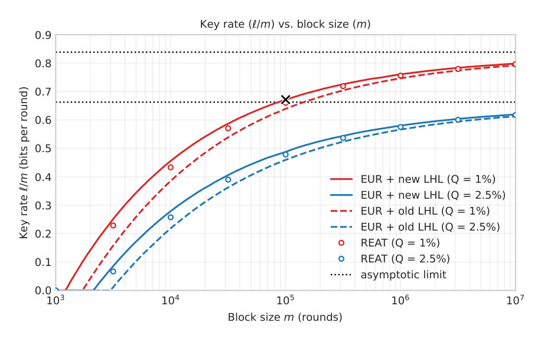
<figcaption class="paper-figure-caption"><b>Fig 1.</b> Figure 1: Finite-block key rates. Secret key bits per round, ℓ/𝑚, are plotted for quantum bit error rates 𝑄= 1% and 2.5%. The entropic uncertainty relation (EUR) curves compare the new and old leftover hash lemmas (LHL) with exact sampling. Their inputs are ideal BB84 overlap 𝑐= 1/2, 𝜀tot = 10−10 and 𝜀com = 0.01. Circles show the corresponding key rates from the refined analysis of the Rényi entropic accumulation theorem [AHT25] due to Goh and Tan [GT26]. For each EUR curve, the protocol parameters 𝑘, 𝑛, 𝑡, 𝑄tol are optimised to maximise ℓ. Table 2 gives example parameter values for the crossed point. See Section III and Appendix D for details on the numerical analysis.</figcaption>
</figure>
<figure class="paper-figure-card">
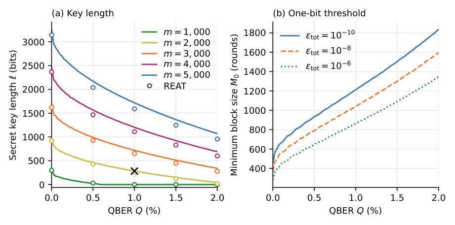
<figcaption class="paper-figure-caption"><b>Fig 2.</b> Figure 2: Key extraction from short blocks. (a) Secret key length for 𝑚∈{1000, 2000, 3000, 4000, 5000} at 𝜀tot = 10−10. Lines show EUR + new LHL with exact sampling; circles show the REAT results [GT26], with negative rates displayed at zero. (b) Minimum block size 𝑀0 yielding one secret bit, for 𝜀tot ∈ {10−10, 10−8, 10−6}. Both panels’ EUR calculations use ideal BB84 overlap 𝑐= 1/2, 𝜀com = 0.01 and assumed leakage coefficients (𝜉1, 𝜉2) = (1.13, 3.82) at every quantum bit error rate (QBER). Panel (a) uses 𝜅= 4/3; (b) retains the full bound of Theorem 1. We optimise 𝑘, 𝑛, 𝑡, 𝑄tol to maximise ℓat fixed 𝑚in (a), and minimise 𝑚 with ℓ≥1 in (b). The cross identifies the example in Table 2. See...</figcaption>
</figure>
<figure class="paper-figure-card">
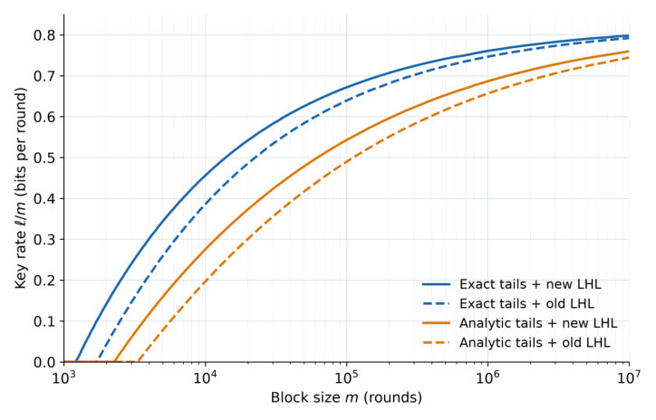
<figcaption class="paper-figure-caption"><b>Fig 3.</b> Figure 3: Contributions of exact tails and improved hashing. Secret key bits per round at 𝑄= 1%, comparing exact and analytic tails with the new and old LHLs. Inputs are ideal BB84 overlap 𝑐= 1/2, 𝜀tot = 10−10 and 𝜀com = 0.01; the new LHL uses 𝜅= 4/3. For each choice of tail bounds and LHL, the protocol parameters 𝑘, 𝑛, 𝑡, 𝑄tol are optimised to maximise ℓ. Table 2 gives example parameter values for the new LHL with exact sampling. See Section III and Appendix D for details on the numerical analysis.</figcaption>
</figure>
</div>

<p><strong>Summary.</strong> This paper significantly improves the theoretical limits on key extraction in Quantum Key Distribution by refining the privacy amplification bounds using the leftover hash lemma. The authors derive a sharper bound on the state deviation, which translates directly into a higher certified secret key rate from the same experimental data. This work highlights how precise mathematical analysis can boost the practical utility of quantum communication systems.</p>
<p><strong>Why it may be interesting.</strong> While focused on QKD, the rigorous mathematical techniques for bounding information leakage and extracting randomness from noisy quantum measurements are fundamental to understanding the limits of quantum communication protocols.</p>
<details>
<summary>Detailed structure</summary>
<p><strong>Main problem.</strong> The paper aims to increase the amount of secret key extractable from a Quantum Key Distribution (QKD) run, especially when dealing with finite amounts of experimental data.</p>
<p><strong>Main result.</strong> By refining privacy amplification bounds using the leftover hash lemma, the authors demonstrate a provable increase in the certified key rate compared to state-of-the-art techniques.</p>
<p><strong>Method.</strong> The core method involves refining the privacy amplification bounds by improving the bound on the trace distance between the actual state and the hashed state, which is then incorporated into the overall security analysis.</p>
<p><strong>Model / system.</strong> The analysis is applied to Quantum Key Distribution (QKD) protocols, using security proofs based on entropic uncertainty relations and finite-block analysis.</p>
<p><strong>Key observables.</strong> Secret key length ($\ell$), conditional smooth min-entropy ($H_{\epsilon}^{\min}(X|E)_{
ho}$), and the trace distance $\Delta(
ho, H)$.</p>
<p><strong>Important parameters / regimes.</strong> Smoothing error parameter ($\epsilon$), total security error ($\epsilon_{	ext{tot}}$), and the block size ($m$).</p>
<p><strong>Assumptions / limitations.</strong> The analysis builds upon existing frameworks using entropic uncertainty relations and assumes the applicability of the refined leftover hash lemma for 2*-universal hash families.</p>
<p><strong>Figures summary.</strong> Figures compare finite-block key rates ($\ell/m$) versus block size ($m$) for various error rates, showing the advantage of the new LHL over older bounds.</p>
<p><strong>Paper structure.</strong> The paper proceeds by refining the bound on the trace distance $\Delta(
ho, H)$ (using variational expressions and inequalities), establishing a sharper Leftover Hash Lemma (Theorem 1), and finally combining this into a comprehensive finite-key security proof (Theorem 2) to determine the maximum certified key length.</p>
</details>
<details>
<summary>Abstract</summary>
<p>The amount of secret key that can be obtained from a quantum key distribution run depends on both the physically observed error rates and the mathematical bounds used to certify security. For finite datasets, conservative bounds force users to discard a substantial fraction of the potentially available key. Here we further refine and extend the privacy amplification bounds achievable through the recent leftover hash lemma of Regula and Tomamichel [arXiv:2603.04493] and incorporate them into the security analysis of quantum key distribution based on entropic uncertainty relations. This improves on state-of-the-art key rates in finite-block regimes, certifying more secret key from the same experimental data without changes to the protocol, and outperforming techniques based on entropy accumulation. The results illustrate how sharper mathematical estimates can directly increase the usable output of a quantum communication system.</p>
</details>
<p><sub><a href="#top">↑ back to top</a></sub></p>

<p><a id="paper-2609.40184"></a></p>
<h3 id="more-is-lessoptimal-security-for-haar-quantum-money-and-more"><a href="http://arxiv.org/abs/2609.40184v1">More is Less:Optimal Security for Haar Quantum Money and More</a></h3>
<p><strong>Authors:</strong> Zihan Hao, Xingjian Li, Qipeng Liu, Wei Zhan<br>
<strong>Type:</strong> theory · <strong>Category:</strong> quantum information and computing · <strong>PDF:</strong> <a href="https://arxiv.org/pdf/2609.40184v1">https://arxiv.org/pdf/2609.40184v1</a><br>
<strong>Analysis basis:</strong> full PDF text, analyzed in chunks
<strong>Topic relevance:</strong> <code>quantum measurements</code> <strong>2/5</strong></p>
<div class="figure-strip-hint">↔ Scroll figures horizontally</div>
<div class="paper-figures-scroll">
<figure class="paper-figure-card">
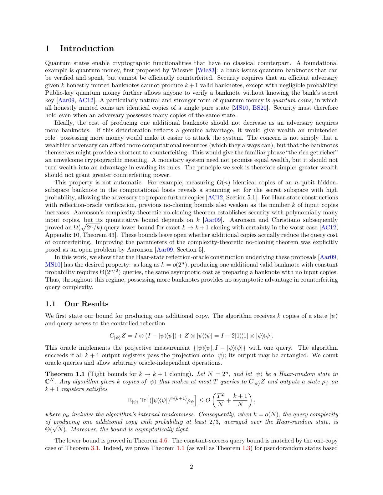
<figcaption class="paper-figure-caption"><b>Fig 1.</b> Low-resolution page preview, page 2</figcaption>
</figure>
<figure class="paper-figure-card">
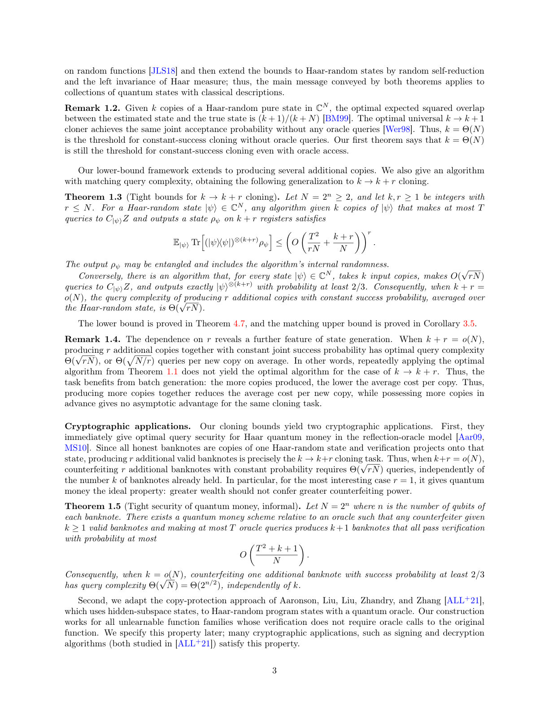
<figcaption class="paper-figure-caption"><b>Fig 2.</b> Low-resolution page preview, page 3</figcaption>
</figure>
<figure class="paper-figure-card">
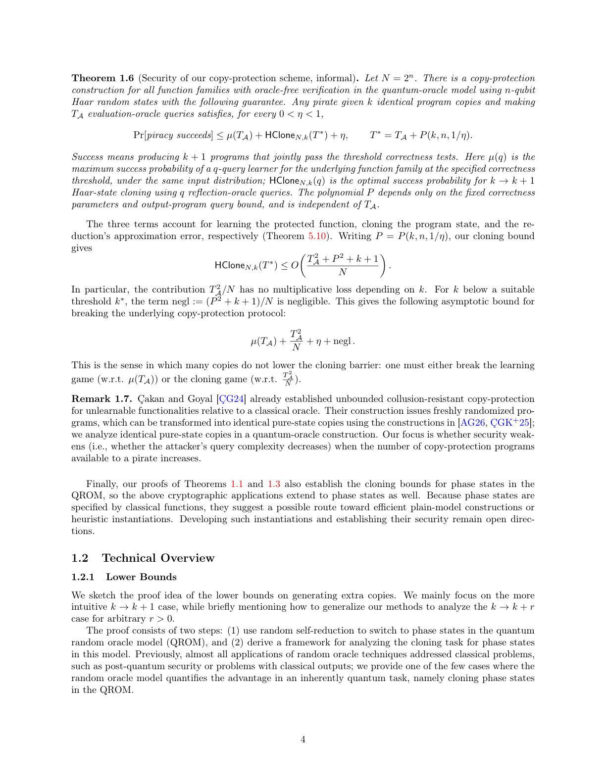
<figcaption class="paper-figure-caption"><b>Fig 3.</b> Low-resolution page preview, page 4</figcaption>
</figure>
<figure class="paper-figure-card">
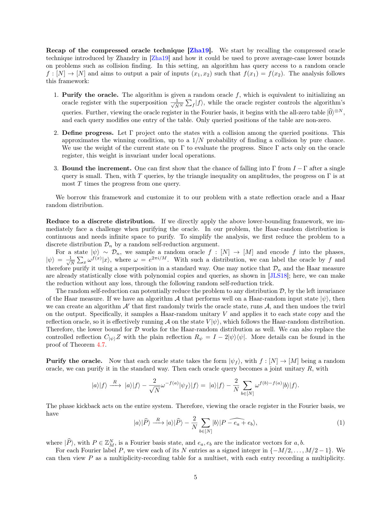
<figcaption class="paper-figure-caption"><b>Fig 4.</b> Low-resolution page preview, page 5</figcaption>
</figure>
<figure class="paper-figure-card">
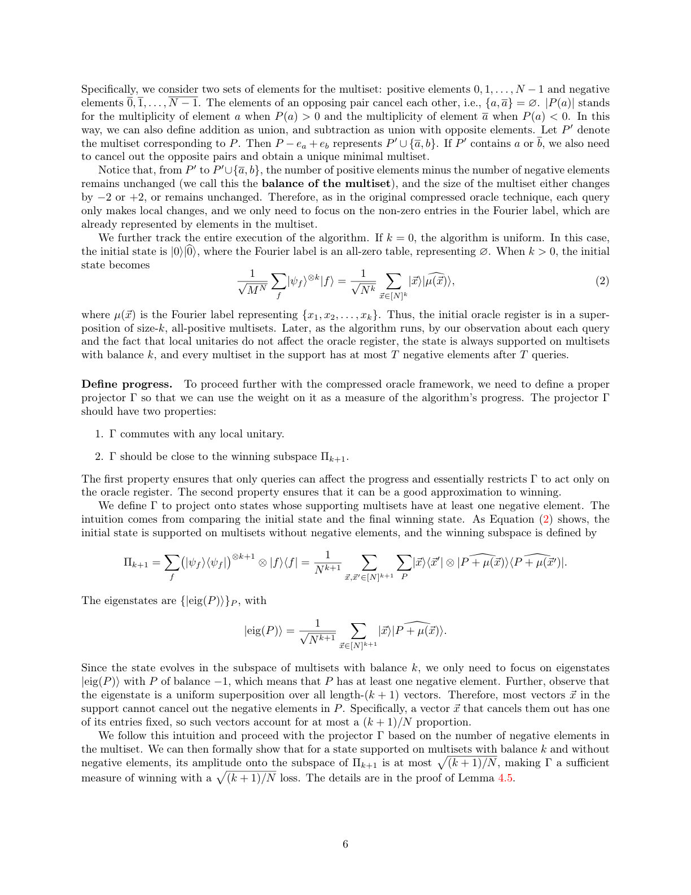
<figcaption class="paper-figure-caption"><b>Fig 5.</b> Low-resolution page preview, page 6</figcaption>
</figure>
</div>

<p><strong>Summary.</strong> This paper rigorously analyzes the security of quantum money by showing that the difficulty of counterfeiting remains constant even as the number of existing banknotes increases, provided the total count is small relative to the system size. It achieves this by developing a novel framework based on the compressed-oracle technique to establish tight lower bounds on cloning complexity. The work confirms that quantum money schemes can achieve optimal security where wealth does not confer counterfeiting power.</p>
<p><strong>Why it may be interesting.</strong> While focused on quantum cryptography, the techniques developed—such as progress measurement using compressed oracles—are fundamental tools in quantum information theory applicable to analyzing resource constraints in complex quantum protocols.</p>
<details>
<summary>Detailed structure</summary>
<p><strong>Main problem.</strong> The paper investigates the security of quantum money and copy-protection schemes, specifically determining if possessing more copies provides an asymptotic advantage in counterfeiting.</p>
<p><strong>Main result.</strong> It proves that for Haar-random state constructions, the query complexity to counterfeit additional banknotes remains constant (independent of existing wealth) as long as the total number of banknotes is sub-extensive relative to the system size.</p>
<p><strong>Method.</strong> The authors develop a framework using the compressed-oracle technique to analyze progress measures for quantum tasks like Haar state cloning, establishing tight lower bounds via matching attacks.</p>
<p><strong>Model / system.</strong> The model involves quantum states, specifically Haar-random states in $C^N$, and security is analyzed using a controlled reflection oracle. The analysis is framed within the Quantum Random Oracle Model (QROM).</p>
<p><strong>Key observables.</strong> Query complexity ($T$), success probabilities for learning and cloning, and the asymptotic security threshold ($k+r = o(N)$).</p>
<p><strong>Important parameters / regimes.</strong> Number of existing banknotes ($k$), number of additional copies ($r$), and the system dimension ($N=2n$).</p>
<p><strong>Assumptions / limitations.</strong> The results are established for the Haar-state reflection-oracle construction and rely on the asymptotic condition $k+r = o(N)$ to guarantee security.</p>
<p><strong>Paper structure.</strong> The paper builds its argument by first developing the compressed-oracle framework, then applying it to establish lower bounds for cloning, and finally synthesizing these results to prove the optimal security bounds for quantum money and copy-protection.</p>
</details>
<details>
<summary>Abstract</summary>
<p>Quantum cryptography leverages unclonability to enable a wide range of cryptographic applications that are impossible classically, such as digital currency protected against counterfeiting by quantum mechanics. Security requires that no efficient user can produce even one additional valid banknote beyond those already in their possession. However, existing security bounds weaken as the number of banknotes available to a user increases.   In this paper, we study a construction of quantum money whose asymptotic query security does not deteriorate as long as the number of banknotes available to a user remains below the scale required for state tomography. In particular, we show that the construction based on an $n$-qubit Haar-random state and a reflection oracle achieves optimal query security: unless a user holds $Ω(2^n)$ banknotes, their existing banknotes cannot asymptotically speed up counterfeiting --- their best possible attack is the same as if they do not have any banknotes. To establish this result, we develop a framework based on the compressed-oracle technique for defining and analyzing progress measures for quantum tasks such as Haar state cloning. Furthermore, we prove a tight lower bound for generating $r$ additional copies, give a matching attack, and apply our results to quantum copy-protection.</p>
</details>
<p><sub><a href="#top">↑ back to top</a></sub></p>

<p><a id="paper-2609.40350"></a></p>
<h3 id="on-the-simplest-quantum-secure-block-cipher"><a href="http://arxiv.org/abs/2609.40350v1">On The Simplest Quantum-Secure Block Cipher</a></h3>
<p><strong>Authors:</strong> Gorjan Alagic, Joseph Carolan, Christian Majenz, Saliha Tokat<br>
<strong>Type:</strong> theory · <strong>Category:</strong> quantum information and computing · <strong>PDF:</strong> <a href="https://arxiv.org/pdf/2609.40350v1">https://arxiv.org/pdf/2609.40350v1</a><br>
<strong>Analysis basis:</strong> full PDF text, analyzed in chunks
<strong>Topic relevance:</strong> <code>quantum measurements</code> <strong>2/5</strong></p>
<div class="figure-strip-hint">↔ Scroll figures horizontally</div>
<div class="paper-figures-scroll">
<figure class="paper-figure-card">
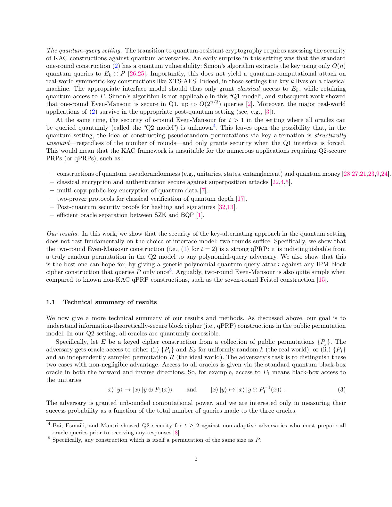
<figcaption class="paper-figure-caption"><b>Fig 1.</b> Low-resolution page preview, page 2</figcaption>
</figure>
<figure class="paper-figure-card">
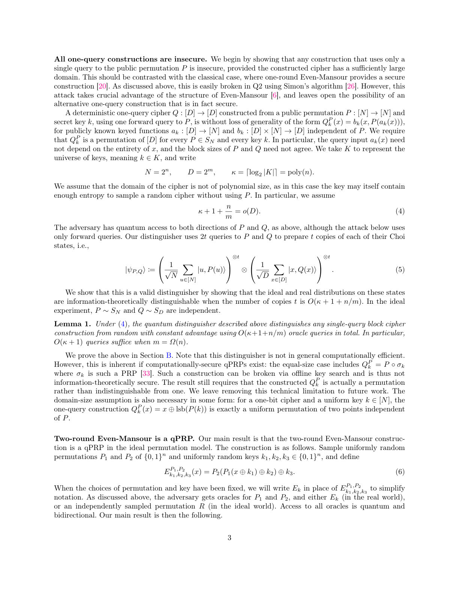
<figcaption class="paper-figure-caption"><b>Fig 2.</b> Low-resolution page preview, page 3</figcaption>
</figure>
<figure class="paper-figure-card">
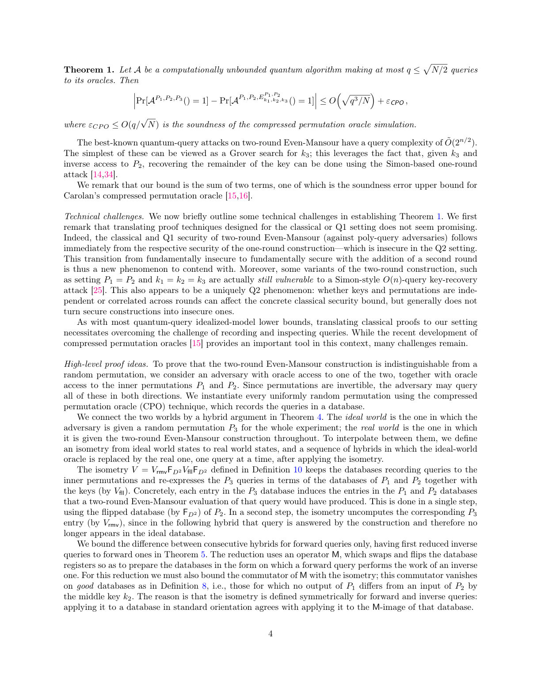
<figcaption class="paper-figure-caption"><b>Fig 3.</b> Low-resolution page preview, page 4</figcaption>
</figure>
<figure class="paper-figure-card">
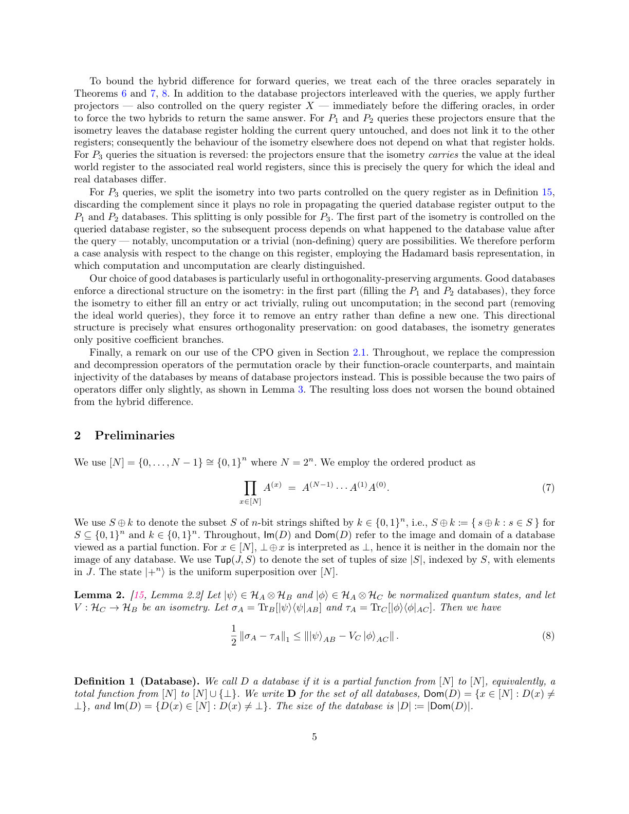
<figcaption class="paper-figure-caption"><b>Fig 4.</b> Low-resolution page preview, page 5</figcaption>
</figure>
<figure class="paper-figure-card">
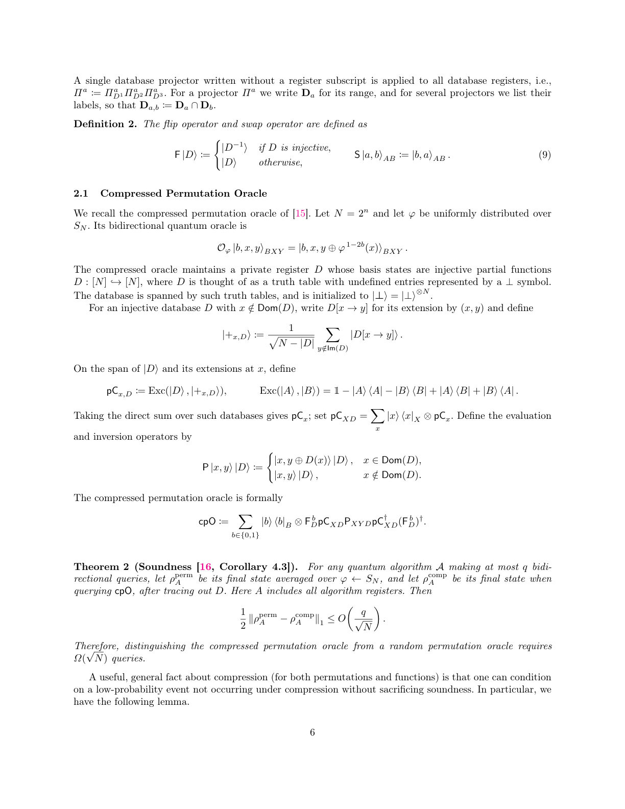
<figcaption class="paper-figure-caption"><b>Fig 5.</b> Low-resolution page preview, page 6</figcaption>
</figure>
</div>

<p><strong>Summary.</strong> This paper establishes the quantum security of a specific two-round block cipher construction (Even-Mansour) within the Ideal Permutation Model. It proves that this cipher acts as a quantum pseudorandom permutation against adaptive quantum adversaries. The work is significant for advancing the theoretical understanding of quantum-secure primitives in cryptography.</p>
<p><strong>Why it may be interesting.</strong> While focused on cryptography, the techniques developed—especially the use of isometries and bounding quantum state differences—are highly relevant to analyzing the security and distinguishability of quantum processes in quantum information theory.</p>
<details>
<summary>Detailed structure</summary>
<p><strong>Main problem.</strong> The paper aims to construct and prove the quantum security of Pseudorandom Permutations (PRPs) using the Key-Alternating Cipher (KAC) framework in the quantum-query setting.</p>
<p><strong>Main result.</strong> The two-round Even-Mansour cipher is proven to be information theoretically secure (a qPRP) in the Ideal Permutation Model against polynomially-many adaptive forward and inverse quantum queries.</p>
<p><strong>Method.</strong> The security proof utilizes a hybrid argument, employing an isometry and bounding the distinguishability advantage between the real and ideal quantum distributions.</p>
<p><strong>Model / system.</strong> The model is the Ideal Permutation Model (IPM) extended to the Q2 setting, involving quantum oracles for permutations ($P_1, P_2$) and the cipher structure $E_{k_1,k_2,k_3}(x)$.</p>
<p><strong>Key observables.</strong> The distinguishability advantage of a quantum algorithm distinguishing the real world from the ideal world, and the success probability of the quantum distinguisher.</p>
<p><strong>Important parameters / regimes.</strong> Query complexity ($q$), domain size ($N$), and the number of rounds (specifically two rounds).</p>
<p><strong>Assumptions / limitations.</strong> The proof relies on the use of compressed permutation oracles (CPO) and specific algebraic manipulations of quantum states in the Hadamard basis.</p>
<p><strong>Figures summary.</strong> Not specified, but the notes detail complex algebraic derivations involving bounding differences between quantum operators ($  ext{cORVp}\Gamma^2 -Vp\Gamma^2  ext{cOI}$).</p>
<p><strong>Paper structure.</strong> The paper progresses from establishing the general framework for quantum security, proving the two-round security via a hybrid argument, and then detailing the complex algebraic steps required to bound the difference between the ideal and real world quantum operations.</p>
</details>
<details>
<summary>Abstract</summary>
<p>Pseudorandom permutations are ubiquitous in theoretical and applied cryptography. PRPs that offer security even against adversaries making quantum queries are of increasing interest, and used in applications ranging from constructing pseudorandom unitaries to separating SZK from BQP.   A successful framework for constructing classically-secure PRPs is the key-alternating Even-Mansour approach, which interleaves applications of public permutations with additions of round keys. The single-round construction is already classically secure in the ideal permutation model (IPM), with added rounds offering improved concrete security. However, in the quantum-query setting, the status of this framework is presently unclear. A simple quantum-query attack based on Simon's algorithm breaks the one-round cipher. For two or more rounds, security is only known against non-adaptive adversaries who must prepare all queries in advance.   In this work, we show that the two-round Even-Mansour cipher is information theoretically secure in the IPM against adversaries making polynomially-many adaptive forward and inverse quantum queries to all available oracles. Our proof uses compressed permutation oracles and a specially crafted isometry relating the ideal and real experiments. We also show that this construction is minimal, in the sense that essentially any cipher constructed via a single call to a public permutation is quantumly insecure.</p>
</details>
<p><sub><a href="#top">↑ back to top</a></sub></p>

<p><a id="paper-2609.39280"></a></p>
<h3 id="optimal-learning-of-covariant-quantum-states-and-channels"><a href="http://arxiv.org/abs/2609.39280v1">Optimal learning of covariant quantum states and channels</a></h3>
<p><strong>Authors:</strong> Satoshi Yoshida, Kazuki Okigami, Pietro M. Posta, Dmitry Grinko<br>
<strong>Type:</strong> theory · <strong>Category:</strong> quantum information and computing · <strong>PDF:</strong> <a href="https://arxiv.org/pdf/2609.39280v1">https://arxiv.org/pdf/2609.39280v1</a><br>
<strong>Analysis basis:</strong> full PDF text, analyzed in chunks
<strong>Topic relevance:</strong> <code>quantum measurements</code> <strong>2/5</strong></p>
<div class="figure-strip-hint">↔ Scroll figures horizontally</div>
<div class="paper-figures-scroll">
<figure class="paper-figure-card">
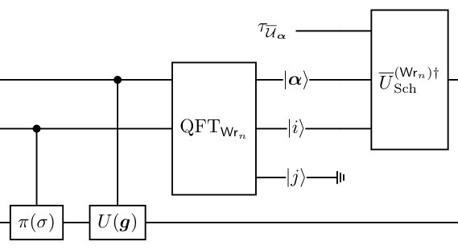
<figcaption class="paper-figure-caption"><b>Fig 1.</b> Figure 1: Quantum circuit for the random purification channel of G-invariant quantum states. The two controlled gates jointly implement ctrl −R, and after the quantum Fourier transform QFTWrn, the Fourier index j is discarded. The maximally mixed state τUα is prepared conditionally on the</figcaption>
</figure>
<figure class="paper-figure-card">

<figcaption class="paper-figure-caption"><b>Fig 2.</b> Figure 2: (a) Quantum circuit for the random dilation superchannel on G-covariant quantum channels. (b) Its derivation from random purification of J⊗n Λ . The left cup denotes the unnormalized maximally entangled vector |1d n I ⟩⟩. The right cap represents a postselected closed timelike curve (P-CTC), used here as a formal contraction with the corresponding unnormalized maximally entangled bra. Moving the reference-side controlled gates through this contraction replaces U1(g)π(σ) by π(σ)†U1(g)† and yields the deterministic circuit in (a).</figcaption>
</figure>
<figure class="paper-figure-card">
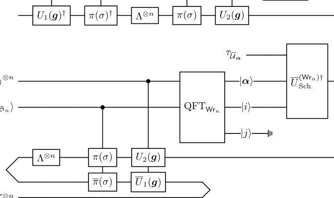
<figcaption class="paper-figure-caption"><b>Fig 3.</b> Figure 2(b) expresses this identity as the following formal circuit construction using the P-CTC [LMGP+11]:</figcaption>
</figure>
<figure class="paper-figure-card">
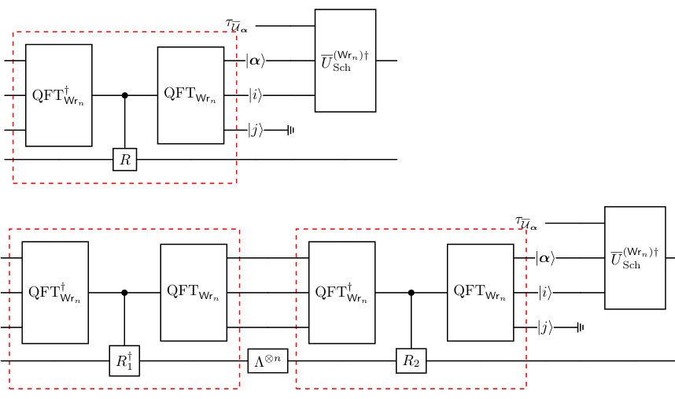
<figcaption class="paper-figure-caption"><b>Fig 4.</b> Figure 3: (a) The random purification circuit and (b) the random dilation circuit using the generalized phase estimation shown in the red boxes. By replacing the generalized phase estimation (red boxes) with the Clebsch–Gordan transforms, we can implement these circuits for compact groups using a finite number of qubits.</figcaption>
</figure>
<figure class="paper-figure-card">
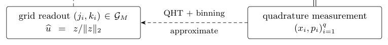
<figcaption class="paper-figure-caption"><b>Fig 5.</b> Figure 4: Schematic picture of the relation between the qubit and bosonic descriptions of the Hayashi measurement.</figcaption>
</figure>
</div>

<p><strong>Summary.</strong> This work develops optimal theoretical and practical protocols for quantum state and channel tomography when symmetries are known. By leveraging techniques like random purification and constructing efficient quantum circuits, the authors establish optimal query scaling bounds for learning these quantum objects. This is crucial for designing resource-efficient quantum characterization experiments.</p>
<p><strong>Why it may be interesting.</strong> The rigorous determination of optimal query complexity for tomography, especially when symmetries are exploited, provides fundamental resource bounds for quantum characterization protocols relevant to quantum hardware testing.</p>
<details>
<summary>Detailed structure</summary>
<p><strong>Main problem.</strong> The paper addresses the theoretical problem of optimally learning (tomography) quantum states and channels, particularly when the underlying system possesses known symmetries.</p>
<p><strong>Main result.</strong> It derives optimal query scalings for learning permutation-covariant channels and constructs efficient quantum circuits for state/channel learning, achieving polynomial gate complexity.</p>
<p><strong>Method.</strong> The authors employ techniques like random purification and dilation, reducing the problem to pure-state estimation, and utilize advanced mathematical tools including bosonic encoding, the quantum Hermite transform, and asymptotic combinatorial analysis.</p>
<p><strong>Model / system.</strong> The focus is on general quantum states ($
ho$) and quantum channels ($\Lambda$) acting on qudits, specifically those exhibiting symmetries related to compact groups ($G$-covariant or permutation-covariant).</p>
<p><strong>Key observables.</strong> Trace-distance error ($\epsilon$), diamond-distance error ($\epsilon$), and the required number of queries (sample complexity) or circuit depth (gate complexity).</p>
<p><strong>Important parameters / regimes.</strong> The complexity scales depend on the system size ($k$), local dimension ($d$), and the desired error $\epsilon$.</p>
<p><strong>Assumptions / limitations.</strong> The analysis relies on the ability to exploit known symmetries and assumes the existence of efficient quantum circuit approximations for key measurements like the Hayashi measurement.</p>
<p><strong>Paper structure.</strong> The paper progresses from establishing general bounds for symmetric states and covariant channels, to detailing the construction of efficient quantum circuits for the necessary measurements, and finally deriving explicit, optimal query lower bounds using combinatorial methods.</p>
</details>
<details>
<summary>Abstract</summary>
<p>We give collective tomography protocols for quantum states and channels with known symmetries, using random purification and dilation to reduce learning to pure-state estimation. For states commuting with a compact-group representation with multiplicities $m_λ$, the optimal copy complexity is $Θ((\sum_λm_λ^2+\logη^{-1})/\varepsilon^2)$ for sufficiently small trace-distance error $\varepsilon$ and failure probability $η$ for the nontrivial case $\sum_λm_λ^2>1$. For $G$-covariant channels with finite-dimensional unitary representations of a compact group $G$, parallel $\widetilde{O}(D_G/\varepsilon^2)$ queries achieve a diamond-distance error $\varepsilon $ at fixed success probability $2/3$, where $D_G$ counts the real parameters of covariant Choi operators before imposing trace preservation. For permutation-covariant channels on $k$ qudits of fixed local dimension $d$, at sufficiently small fixed error and fixed success probability $2/3$, we obtain the optimal query scalings $Θ_d(k^{d^4-1})$ for diamond distance and $Θ_d(k^{d^4-d^2})$ for Choi trace distance. Furthermore, we resolve an open problem in quantum tomography of constructing efficient quantum circuits that approximate the Hayashi measurement for optimal pure-state estimation. We encode states in the symmetric subspace into bosonic occupation modes, realize the measurement by heterodyne detection and normalization, and approximate this procedure on qubits using the quantum Hermite transform. Combined with our symmetry-compatible purification and dilation circuits, this yields query-optimal and gate-efficient learners of permutation-covariant states and channels with gate complexity $O_d(\mathrm{poly}(k,\varepsilon^{-1},\logη^{-1}))$.</p>
</details>
<p><sub><a href="#top">↑ back to top</a></sub></p>

<p><a id="paper-2609.40078"></a></p>
<h3 id="oscillator-qubit-primitives-for-a-molecular-quantum-dynamics-simulator"><a href="http://arxiv.org/abs/2609.40078v1">Oscillator-Qubit Primitives for a Molecular Quantum Dynamics Simulator</a></h3>
<p><strong>Authors:</strong> Jungsoo Hong, Joonsuk Huh<br>
<strong>Type:</strong> theory · <strong>Category:</strong> other · <strong>PDF:</strong> <a href="https://arxiv.org/pdf/2609.40078v1">https://arxiv.org/pdf/2609.40078v1</a><br>
<strong>Analysis basis:</strong> full PDF text, analyzed in chunks
<strong>Topic relevance:</strong> <code>analog quantum simulation</code> <strong>2/5</strong></p>
<div class="figure-strip-hint">↔ Scroll figures horizontally</div>
<div class="paper-figures-scroll">
<figure class="paper-figure-card">
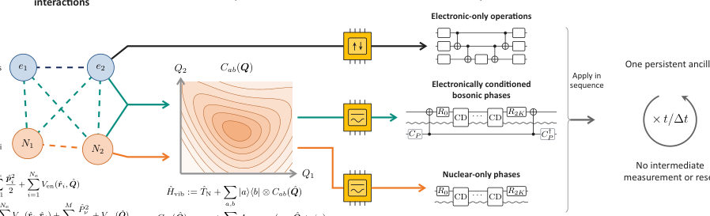
<figcaption class="paper-figure-caption"><b>Fig 1.</b> FIG. 1. From molecular interactions to oscillator–qubit circuits. The interactions among electrons and nuclei (left) are expressed in an electronic basis, where each matrix element Cab( ˆ Q) is a sum of sinusoidal functions of the nuclear coordinates (center). The contour plot sketches one such element, and the colored arrows indicate the origin of each term only schematically, because the electronic basis mixes the microscopic interactions. Each term is then compiled into an oscillator–qubit circuit (right). Terms without coordinate dependence become electronic-only operations, and coordinate-dependent terms become bosonic phase gates that are either conditioned on the electronic state or...</figcaption>
</figure>
<figure class="paper-figure-card">
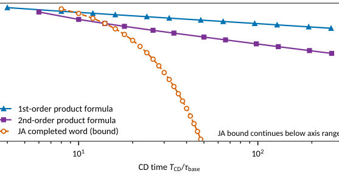
<figcaption class="paper-figure-caption"><b>Fig 2.</b> FIG. 2. Single-tone circuit, ideal-state illustration, and error comparison. Panels (b) and (c) use separate parameter choices. (a) A product formula (TGIFS [14–16]) repeats a weak cell within one phase gate. JA uses 2K balanced queries and compiled Z rotations for the paired ancilla target exp[−iΛσ(a) z cos(µQ)], with electronic P = I. (b) Ideal vacuum-output Wigner function for the opposite ancilla branch, exp[+iΛ cos(µQ)], at (Λ, µ) = (6, 2). The vertical axis P is the momentum conjugate to Q. It is not the electronic Pauli string. The dashed line is P = −Λµ sin(µQ). (c) Sampled paired-unitary errors at Λ = 2 for first-order (Lie–Trotter) and second-order (Strang) product formulas. The...</figcaption>
</figure>
<figure class="paper-figure-card">
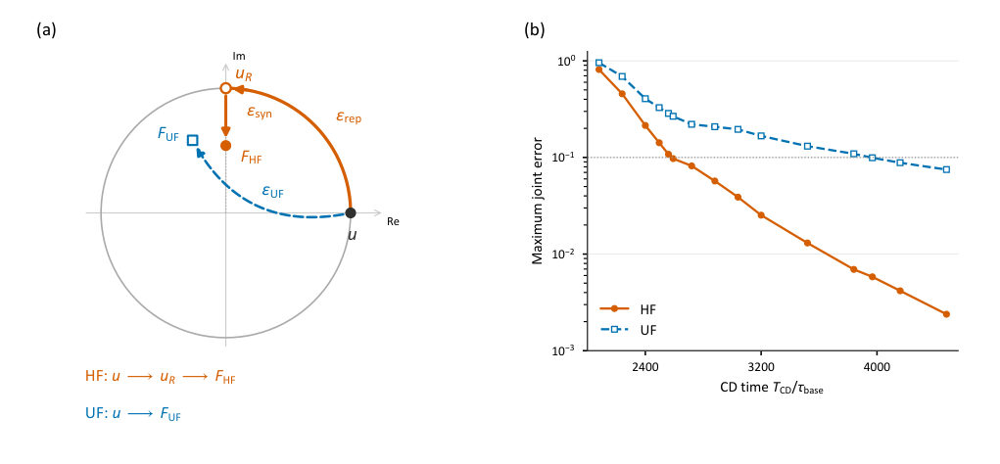
<figcaption class="paper-figure-caption"><b>Fig 3.</b> FIG. 3. Approximation stages and coherent serial cost. (a) Hamiltonian-first (HF) and unitary-first (UF) routes in the complex plane, with representation error εrep, HF synthesis error εsyn, and UF approximation error εUF; zero HF synthesis phase error is shown schematically. (b) Best-found sampled joint-unitary error over all 48 block prefixes versus CD time for 16 repetitions of three distinct groups. Each point uses the same 513×513 coordinate grid and completion convention. The dotted line marks error 0.1. These finite-search curves are not global optima or continuum error certificates.</figcaption>
</figure>
<figure class="paper-figure-card">
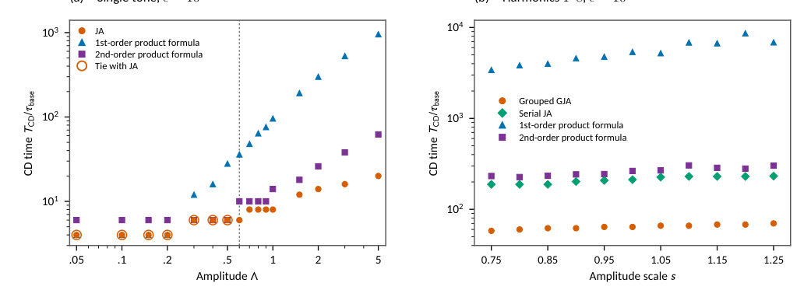
<figcaption class="paper-figure-caption"><b>Fig 4.</b> FIG. 4. Recovered compiler costs. (a) Single-tone target with coordinate scale LQ = 10 and offset ϕ0 = 0.025, common full- circle paired-unitary error tolerance 10−2. The vertical axis is the CD time in units of one balanced query, τbase. Rings mark ties and the dashed guide marks the first strict saving on this grid. (b) Dense harmonics 1–8 [Eq. (49)], eleven scales, common full-circle paired-unitary error tolerance 10−3. Grouped GJA is compared with serial JA and first- and second-order product formulas (TGIFS). A harmonic-m query costs |m|τbase. Each panel uses one common criterion across its families. Rotation and electronic-control durations are excluded. These reference costs are not...</figcaption>
</figure>
<figure class="paper-figure-card">
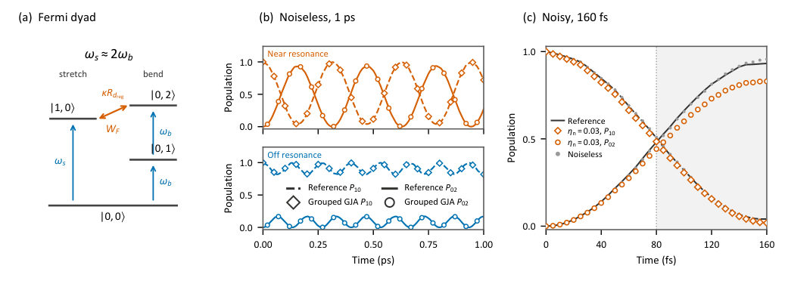
<figcaption class="paper-figure-caption"><b>Fig 5.</b> FIG. 5. Dynamics of the simplified carbon dioxide model from |0⟩a |1, 0⟩with one persistent ancilla and no postselection or reset. (a) Fermi dyad with schematic levels. The bounded interaction κRdreg couples |1, 0⟩and |0, 2⟩with κ ⟨0, 2| Rdreg |1, 0⟩= |WF|, and the near-resonant detuning is δ = ωs −2ωb = −7.87 cm−1. (b) Noiseless 1 ps populations near resonance (orange) and off resonance (blue, δ = −256.16 cm−1): reference lines and grouped-GJA markers. (c) Near-resonant populations of the rule-based (3, 3, 5) circuit at noise-rate multiplier ηn = 0.03 over 160 fs, with the noiseless circuit (gray) for comparison. Black lines show the reference populations. Noise acts throughout the 160 fs....</figcaption>
</figure>
</div>

<p><strong>Summary.</strong> This paper develops optimized quantum circuit primitives for simulating molecular quantum dynamics using oscillator-qubit architectures. By employing generalized Jacobi-Anger expansions within QSP, the authors create efficient gates for modeling complex vibronic interactions. The work sets a crucial benchmark for near-term quantum processors aiming to simulate chemical reactions.</p>
<p><strong>Why it may be interesting.</strong> This work directly addresses the quantum computational implementation of fundamental chemical physics problems, providing concrete, optimized quantum circuits for simulating complex molecular interactions.</p>
<details>
<summary>Detailed structure</summary>
<p><strong>Main problem.</strong> The primary challenge is simulating molecular quantum dynamics that requires treating both electronic and nuclear degrees of freedom quantum mechanically, which is exponentially hard classically.</p>
<p><strong>Main result.</strong> The authors propose near-optimal quantum primitives for this simulation, achieving benchmark circuits significantly shorter than previous direct QSP approaches.</p>
<p><strong>Method.</strong> They synthesize nonlinear and multimode bosonic phase gates using generalized Jacobi-Anger (GJA) expansions within the Quantum Signal Processing (QSP) framework.</p>
<p><strong>Model / system.</strong> The system is a molecular quantum dynamics problem modeled using Oscillator-Qubit (OQ) processors, where electronic states are qubits and nuclear vibrations are bosonic oscillators. The Hamiltonian includes electron-nuclear and electron-electron interactions.</p>
<p><strong>Key observables.</strong> Energy exchange between stretching and bending vibrations of a simplified CO2 model; joint-state error ($  ext{e}_{    ext{joint}}$); trace distance $ ext{D}(t)$.</p>
<p><strong>Important parameters / regimes.</strong> Qubit and oscillator lifetimes (e.g., 2 ms and 5 ms); interaction strength and precision settings.</p>
<p><strong>Assumptions / limitations.</strong> The simulation is limited by current qubit and oscillator coherence lifetimes; the model uses approximations for the full molecular Hamiltonian.</p>
<p><strong>Figures summary.</strong> Figure 1 illustrates the mapping from molecular interactions to OQ circuits, showing how coordinate-dependent terms are compiled into bosonic phase gates.</p>
<p><strong>Paper structure.</strong> The paper first establishes the need for OQ processors for molecular dynamics. It then details the gate synthesis methods (Product-formula vs. QSP) and proposes the GJA-OQ-QSP compiler. Finally, it applies this to simulate energy exchange in a simplified CO2 model.</p>
</details>
<details>
<summary>Abstract</summary>
<p>Molecular quantum dynamics simulations that treat both electrons and nuclei quantum mechanically are crucial for predicting chemical reactions. With classical computation, a full wave-function representation of both types of particles requires resources that grow exponentially with their number. Oscillator-qubit processors, including trapped-ion and circuit QED devices, represent electronic states with qubits and nuclear vibrations with oscillators. Their native operations produce linear vibronic interactions, from which programmable anharmonic interactions can be built. Product-formula approaches build the corresponding phase gates by repeating small noncommuting phase steps, and quantum signal processing (QSP) approaches approximate each gate directly with a Fourier series. Simulations apply many such gates in sequence, so accumulated cost and error limit how long the dynamics can be followed. We propose near-optimal quantum primitives for molecular quantum dynamics simulation, covering the representations of both types of particles and their interactions. We synthesize nonlinear and multimode bosonic phase gates using generalized Jacobi-Anger (GJA) expansions within QSP, with a cost that grows near-optimally in both interaction strength and precision. Our interaction model and gate synthesis each have their own accuracy setting. Chosen together, these settings make our multimode benchmark circuits about one-third shorter than those of the previous direct QSP approach. We then simulate energy exchange between the stretching and bending vibrations of a simplified carbon dioxide model. With circuit-QED noise, a short simulation narrowly misses our accuracy criteria at qubit and oscillator lifetimes near 2 ms and 5 ms. These lifetimes mark a concrete checkpoint on the way to simulating anharmonic multimode molecular quantum dynamics on near-term oscillator-qubit processors.</p>
</details>
<p><sub><a href="#top">↑ back to top</a></sub></p>

<p><a id="paper-2609.40228"></a></p>
<h3 id="perfect-non-local-quantum-computation-is-impossible"><a href="http://arxiv.org/abs/2609.40228v1">Perfect non-local quantum computation is impossible</a></h3>
<p><strong>Authors:</strong> Marten Folkertsma, Dmitry Grinko, Gina Muuss, Florian Speelman<br>
<strong>Type:</strong> theory · <strong>Category:</strong> quantum information and computing · <strong>PDF:</strong> <a href="https://arxiv.org/pdf/2609.40228v1">https://arxiv.org/pdf/2609.40228v1</a><br>
<strong>Analysis basis:</strong> full PDF text, analyzed in chunks
<strong>Topic relevance:</strong> <code>quantum measurements</code> <strong>2/5</strong></p>
<div class="figure-strip-hint">↔ Scroll figures horizontally</div>
<div class="paper-figures-scroll">
<figure class="paper-figure-card">
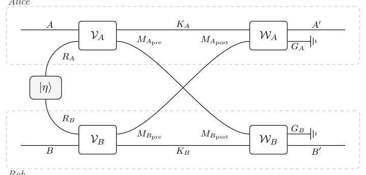
<figcaption class="paper-figure-caption"><b>Fig 1.</b> Figure 1: Structure of an NLQC protocol. Time runs from left to right, and the dashed boxes mark the labs of Alice (top) and Bob (bottom). Before receiving the inputs A and B, the parties share the resource state |η⟩on RARB. Each party applies a local pre-processing channel, VA or VB, keeps the register KA or KB, and sends a message register to the other party. In the single round of simultaneous communication, Alice’s message MApre arrives at Bob as MBpost, and Bob’s message MBpre arrives at Alice as MApost. Each party then applies a local post-processing channel, WA or WB, which outputs A′ or B′ together with an environment register GA or GB that is discarded (ground symbol). The resource...</figcaption>
</figure>
<figure class="paper-figure-card">
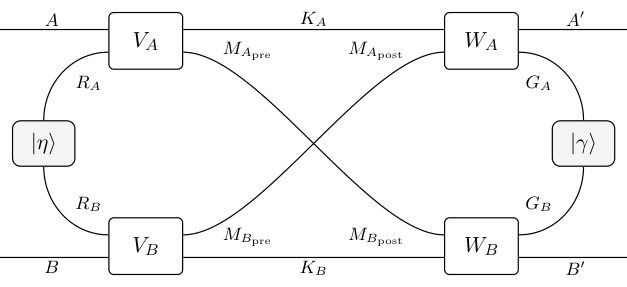
<figcaption class="paper-figure-caption"><b>Fig 2.</b> Figure 2: Schematic view of the protocol after rigidity analysis. Instead of being discarded the garbage registers now project onto |γ⟩.</figcaption>
</figure>
</div>

<p><strong>Summary.</strong> This paper proves that perfect non-local quantum computation (NLQC) is impossible for almost all target unitaries and measurements, even when using finite quantum resources. By analyzing the geometric constraints on exact protocols, the authors show that the set of achievable operations is restricted to a set of measure zero in the space of all possible operations. This result places strong theoretical bounds on quantum information processing capabilities.</p>
<p><strong>Why it may be interesting.</strong> This work establishes fundamental limitations on the computational power achievable through resource-constrained, non-local quantum interactions, providing deep structural insights into quantum information processing beyond simple circuit models.</p>
<details>
<summary>Detailed structure</summary>
<p><strong>Main problem.</strong> The paper investigates whether every fixed bipartite unitary or quantum measurement can be implemented exactly using a Non-local Quantum Computation (NLQC) protocol with finite-dimensional resources.</p>
<p><strong>Main result.</strong> The authors prove that Haar-almost every bipartite unitary and rank-one projective measurement cannot be exactly implemented via finite-dimensional NLQC protocols. The set of exactly implementable operations is restricted to a countable union of measure-zero orbits.</p>
<p><strong>Method.</strong> The proof uses techniques from differential geometry and semialgebraic geometry, showing that smooth deformations of exact protocols are constrained to local-unitary transformations. This limits the set of achievable unitaries/measurements to a set of measure zero in the space of all possible operations.</p>
<p><strong>Model / system.</strong> The model is Non-local Quantum Computation (NLQC), where two parties use entanglement and communication to realize a joint unitary operation or measurement. The analysis focuses on the structure of the required quantum strategies and the resulting implemented unitary/PVM.</p>
<p><strong>Key observables.</strong> The target unitary $U$ or the Positive Operator-Valued Measure (PVM) $\Phi$, and the associated isometry $F$ implementing the process.</p>
<p><strong>Important parameters / regimes.</strong> Finite dimensionality of resources, the nature of the target unitary (e.g., controlled phase gate with transcendental phase), and the Haar measure on the space of unitaries.</p>
<p><strong>Assumptions / limitations.</strong> The analysis assumes that the set of strategies forming an exact protocol is a semialgebraic set with finitely many connected components, allowing for path analysis via differentiation.</p>
<p><strong>Figures summary.</strong> Not specified in the notes.</p>
<p><strong>Paper structure.</strong> The paper first establishes the general framework for NLQC and then tackles unitaries by analyzing the constraints imposed by smooth deformations (leading to local-unitary orbits). It then extends this rigidity argument to localizable quantum measurements, showing the same measure-zero restriction.</p>
</details>
<details>
<summary>Abstract</summary>
<p>Non-local quantum computation (NLQC) asks two parties to apply a joint operation to their quantum inputs using an entangled resource state and one round of simultaneous quantum communication. NLQC has applications across quantum information, including attacks on quantum position verification, communication complexity, and quantum gravity.   Every bipartite unitary has an approximate NLQC protocol with finite entanglement, and exact protocols are known for several structured families. However, it has remained open whether every fixed unitary admits an exact protocol with finite-dimensional resources. We show that, even for two qubits, Haar-almost every unitary does not admit such a protocol, even when the resource state and local operations are tailored to the target.   The proof first shows that smooth deformations of an exact protocol can only change its target by local unitaries. For a fixed architecture, semialgebraic geometry limits the exact protocols to finitely many connected families, so each architecture reaches only finitely many local-unitary orbits. Taking the union over all architectures, the exactly implementable unitaries form countably many local-unitary orbits. We also show that some natural targets do not admit a protocol: the controlled phase $\mathrm{diag}(1,1,1,e^{iθ})$ has no exact protocol with finite-dimensional resources whenever $e^{iθ}$ is transcendental, for instance for $θ= 1$.   Our results also apply to localizable quantum measurements, whose outcome is obtained from local measurements on inputs and a shared entangled resource state without communication. A rank-one projective measurement in a Haar-random basis is almost surely not localizable with a finite-dimensional resource state and finitely many local outcomes.</p>
</details>
<p><sub><a href="#top">↑ back to top</a></sub></p>

<p><a id="paper-2609.40218"></a></p>
<h3 id="purification-brings-advantages-in-sequential-quantum-channel-discrimination"><a href="http://arxiv.org/abs/2609.40218v1">Purification brings advantages in sequential quantum channel discrimination</a></h3>
<p><strong>Authors:</strong> Zoe G. del Toro, Marco Túlio Quintino, Jessica Bavaresco<br>
<strong>Type:</strong> theory · <strong>Category:</strong> quantum information and computing · <strong>PDF:</strong> <a href="https://arxiv.org/pdf/2609.40218v1">https://arxiv.org/pdf/2609.40218v1</a><br>
<strong>Analysis basis:</strong> full PDF text, analyzed in chunks
<strong>Topic relevance:</strong> <code>quantum measurements</code> <strong>2/5</strong></p>
<div class="figure-strip-hint">↔ Scroll figures horizontally</div>
<div class="paper-figures-scroll">
<figure class="paper-figure-card">
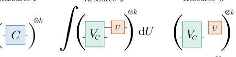
<figcaption class="paper-figure-caption"><b>Fig 1.</b> Figure 1. Channel access models. Depiction of the three channel access models. Resource 1 corresponds to k inde- pendent queries of channel C, defined as R(k) bare(C) in Eq. (4). Resource 2 corresponds to the average over the environment of k queries of the same purification of channel C, defined as R(k) avg(C) in Eq. (5). Resource 3 corresponds to k queries of a fixed unknown purification of channel C, defined as R(k) ukn(C, U) in Eq. (6).</figcaption>
</figure>
<figure class="paper-figure-card">
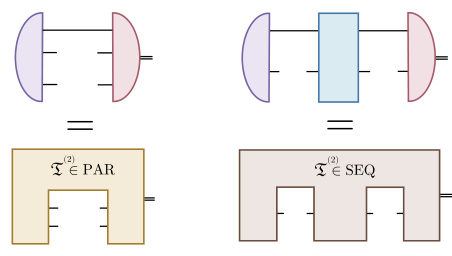
<figcaption class="paper-figure-caption"><b>Fig 2.</b> Figure 2. Implementation of two-query quantum testers with quantum circuits. Top: a quantum strategy for a quantum-to-classical task that acts on two queries of a channel resource either in parallel or sequentially, implemented by a quantum circuit. Bottom: the corresponding representation of these circuits as parallel and sequential quantum testers T(2) ∈PAR and T(2) ∈SEQ.</figcaption>
</figure>
<figure class="paper-figure-card">
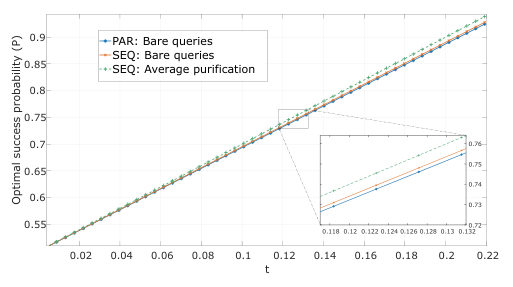
<figcaption class="paper-figure-caption"><b>Fig 3.</b> Figure 3. Discrimination advantage from purifications implies sequential advantage over parallel strategies (Corollary 2). Strict advantage in the two-query probability of successful discrimination for the channels in Theorem 1 under different access models: Bare queries access (R1) un- der parallel strategies (blue), bare queries access (R1) under sequential strategies (orange), and access to averaged purifica- tion (R2) under sequential strategies (green).</figcaption>
</figure>
<figure class="paper-figure-card">
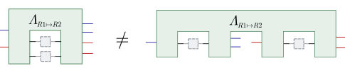
<figcaption class="paper-figure-caption"><b>Fig 4.</b> Figure 4. Implementation constraints of the transform- ation converting R1 into R2 (Corollary 3). The trans- formation ΛR17→R2 that can universally transform bare queries of a quantum channel R(k) bare(C) into the average of its puri- fications R(k) avg(C) can be implemented by a quantum parallel circuit (left) but not as a sequential quantum circuit that al- lows for arbitrary interventions in between queries. The image illustrates the case where k = m = 2.</figcaption>
</figure>
<figure class="paper-figure-card">
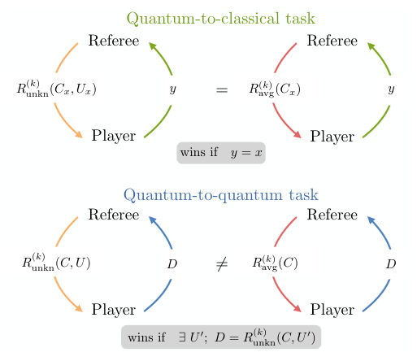
<figcaption class="paper-figure-caption"><b>Fig 5.</b> Figure 5. Quantum-to-classical and quantum-to- quantum tasks. Top: Example of a quantum-to-classical task related to discrimination. In all quantum-to-classical tasks, access to fixed unknown purifications (left) and aver- aged purification (right) achieves equal performance. Bottom: Example of a quantum-to-quantum task where access to fixed unknown purifications (left) outperforms access to averaged purification (right). This task shows how the non-convertibility of these resources can be phrased in operational terms.</figcaption>
</figure>
</div>

<p><strong>Summary.</strong> This theoretical paper proves that in sequential quantum channel discrimination, utilizing the purification of a quantum channel provides a strict operational advantage over using the bare channel resource. The authors rigorously demonstrate this advantage using explicit constructions and by analyzing the limitations of converting bare queries into purified ones.</p>
<p><strong>Why it may be interesting.</strong> The findings establish a clear operational hierarchy among quantum resources, suggesting that the mathematical concept of purification can be leveraged as a genuine, non-trivial resource in quantum information protocols.</p>
<details>
<summary>Detailed structure</summary>
<p><strong>Main problem.</strong> The paper investigates whether accessing the purification of a quantum channel provides an operational advantage over accessing the bare channel resource, particularly in sequential quantum channel discrimination.</p>
<p><strong>Main result.</strong> For sequential discrimination tasks, access to the purified resource yields a strict advantage in the probability of success compared to bare queries, and this advantage is not present for parallel strategies.</p>
<p><strong>Method.</strong> The authors analyze three distinct resource access models (bare, averaged purification, unknown purification) and use quantum information theory tools, including constructing specific sequential quantum testers and deriving upper/lower bounds on the success probability.</p>
<p><strong>Model / system.</strong> The model involves quantum channels $C: \mathcal{L}(\mathcal{H}_I) 	o \mathcal{L}(\mathcal{H}_O)$ and the concept of purification, which extends the system to an environment $\mathcal{H}_E$. The discrimination task compares the performance of these different resource accesses.</p>
<p><strong>Key observables.</strong> The probability of success in quantum channel discrimination, quantified by the maximum average score achievable under different resource access models.</p>
<p><strong>Important parameters / regimes.</strong> The number of queries ($k$), and the specific structure of the channels $C_0$ and $C_1$ used in the explicit constructions.</p>
<p><strong>Assumptions / limitations.</strong> The analysis relies on the mathematical framework of Stinespring dilation and the definition of linear, completely positive, and causal transformations between resource access models.</p>
<p><strong>Figures summary.</strong> Figure 1 depicts the three channel access models ($R_1, R_2, R_3$), illustrating the different ways quantum resources can be accessed for channel discrimination.</p>
<p><strong>Paper structure.</strong> The paper first establishes the theoretical framework by defining the three resource access models and proving the hierarchy of convertibility. It then analyzes the performance in general quantum-to-classical tasks, showing equivalence for parallel strategies but strict advantage for sequential ones. Finally, it provides explicit constructions demonstrating this advantage for $k=2$ and $k=3$ queries.</p>
</details>
<details>
<summary>Abstract</summary>
<p>Purifications are often used as a convenient mathematical representation of quantum states and channels when constructing protocols for quantum information processing tasks. Although powerful, this perspective can suggest that the purifying degrees of freedom and its correlations with an environment are just a useful change of representation. Here we show how they can instead be exploited as an operational resource in sequential quantum channel discrimination, even when the environmental reference frame is unknown or averaged. In contrast to state discrimination and parallel channel discrimination, for which bare and averaged-purification access are equivalent, sequential access to purified resources exhibits a strict advantage in probability of success. We prove this strict separation via two main results. In the first, we construct a pair of families of qubit-qubit channels with a strict separation in the two-query case, and in the second, we show an example of a pair of qubit-qubit channels whose purifications are perfectly distinguishable with three queries while no finite number of bare (non-purified) queries suffices for perfect discrimination. These separations imply an advantage of sequential over parallel strategies for channel discrimination and establish the impossibility of converting bare channel queries into averaged-purification queries via transformations that allow arbitrary interventions between queries, strengthening previous results.</p>
</details>
<p><sub><a href="#top">↑ back to top</a></sub></p>

<p><a id="paper-2609.38500"></a></p>
<h3 id="q-sparse-quantum-subspace-projection-for-near-field-angle-range-spectrum-estimation"><a href="http://arxiv.org/abs/2609.38500v1">Q-SPARSE: Quantum Subspace Projection for Near-Field Angle-Range Spectrum Estimation</a></h3>
<p><strong>Authors:</strong> Mostafizur Rahaman Laskar, Sajad Daei, Gabor Fodor, Mikael Skoglund<br>
<strong>Type:</strong> theory · <strong>Category:</strong> quantum information and computing · <strong>PDF:</strong> <a href="https://arxiv.org/pdf/2609.38500v1">https://arxiv.org/pdf/2609.38500v1</a><br>
<strong>Analysis basis:</strong> full PDF text, analyzed in chunks
<strong>Topic relevance:</strong> <code>quantum measurements</code> <strong>2/5</strong></p>
<div class="figure-strip-hint">↔ Scroll figures horizontally</div>
<div class="paper-figures-scroll">
<figure class="paper-figure-card">
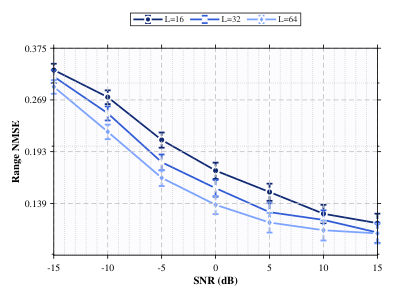
<figcaption class="paper-figure-caption"><b>Fig 1.</b> Fig. 1. Range NMSE versus SNR, K = 2, for L ∈{16, 32, 64} snapshots.</figcaption>
</figure>
<figure class="paper-figure-card">
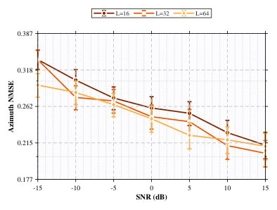
<figcaption class="paper-figure-caption"><b>Fig 2.</b> Fig. 2. Azimuth angle NMSE versus SNR, K = 2, for L ∈{16, 32, 64} snapshots.</figcaption>
</figure>
<figure class="paper-figure-card">

<figcaption class="paper-figure-caption"><b>Fig 3.</b> Fig. 5. Range NMSE for Q-SPARSE, near-field MUSIC, and loaded MVDR on identical scenes, N = 16, K = 10, L = 64.</figcaption>
</figure>
<figure class="paper-figure-card">
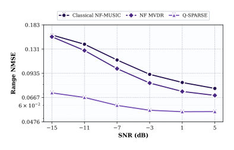
<figcaption class="paper-figure-caption"><b>Fig 4.</b> Fig. 5 compares Q-SPARSE with near-field MUSIC and loaded MVDR on identical scenes. Its range NMSE falls from about 7.6 × 10−2 at −15 dB to 5.2 × 10−2 near 0 dB and, beyond it remains near (5.3-5.7) × 10−2 approximately. The gap comes from the logistic covariance weighting, which also has a classical matrix-function realization and is not evidence of an accuracy gain over the classical baselines, since (8) gives no reason to expect one under a hard signal-noise split. The azimuth angle benchmark shows no method with the smallest NMSE throughout the SNR interval, and forced return of ten peaks with K = 10, N = 16 makes this a loading stress test rather than a consistency experiment. Loaded...</figcaption>
</figure>
<figure class="paper-figure-card">
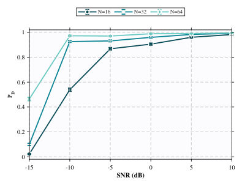
<figcaption class="paper-figure-caption"><b>Fig 5.</b> Fig. 3. Detection probability PD versus N, K = 3, at a noise-only false- alarm calibration of 10−2, L = 64.</figcaption>
</figure>
</div>

<p><strong>Summary.</strong> This paper introduces Q-SPARSE, a quantum algorithm designed for super-resolving joint angle-range parameters in near-field sensing. It leverages Quantum Phase Estimation on covariance-generated evolution to estimate a localization spectrum, thereby avoiding major classical computational hurdles. The results show that Q-SPARSE achieves high accuracy comparable to classical methods while maintaining a potentially lower computational complexity.</p>
<p><strong>Why it may be interesting.</strong> The paper demonstrates a quantum algorithm (Q-SPARSE) applied to a physical sensing problem (radar/array processing), utilizing QPE in a novel way to bypass classical computational bottlenecks associated with subspace estimation.</p>
<details>
<summary>Detailed structure</summary>
<p><strong>Main problem.</strong> The paper addresses the challenge of super-resolution estimation of joint angle-range parameters in near-field sensing, which classically requires complex covariance-eigenspace tests.</p>
<p><strong>Main result.</strong> The proposed Q-SPARSE algorithm achieves estimation accuracy comparable to classical MUSIC while potentially offering lower computational complexity under structured assumptions.</p>
<p><strong>Method.</strong> It employs a quantum subspace-projection algorithm that uses Quantum Phase Estimation (QPE) on covariance-generated evolution, avoiding the classical bottleneck of full eigenstate preparation.</p>
<p><strong>Model / system.</strong> The system models near-field wavefront curvature using an N-sensor uniform linear array, where the array response vector depends on both range (r) and angle (theta).</p>
<p><strong>Key observables.</strong> The primary diagnostic is the localization spectrum, $S_Q(r, 	heta)$, and performance metrics include Range and Azimuth Normalized Mean Squared Error (NMSE) and Detection Probability (PD).</p>
<p><strong>Important parameters / regimes.</strong> Key parameters include the number of qubits ($q$), the number of measurement shots ($M$), the carrier frequency ($f_c = 28 	ext{ GHz}$), and the array geometry ($\lambda/2$ spacing).</p>
<p><strong>Assumptions / limitations.</strong> The method assumes an ideal signal-noise partition for its theoretical score equivalence, and the finite-QPE score is derived for a finite number of qubits and shots.</p>
<p><strong>Figures summary.</strong> Figures demonstrate the convergence of NMSE to classical MUSIC levels as SNR increases, and show PD vs. SNR and PD vs. target count, confirming performance metrics.</p>
<p><strong>Paper structure.</strong> The paper introduces the near-field problem and the classical MUSIC score, then proposes Q-SPARSE using QPE. It details the finite-QPE score derivation, the nearest-bin selection scheme, and concludes with numerical results on IBM's QISKIT platform.</p>
</details>
<details>
<summary>Abstract</summary>
<p>Near-field wavefront curvature enables joint angle-range localization, but exploiting it entails repeated covariance-eigenspace tests over a two-dimensional spherical manifold. We propose a quantum subspace-projection algorithm (Q-SPARSE) for super-resolution estimation of parameters in the near field, employing spectral signature similar to MUSIC. Q-SPARSE prepares each spherical steering hypothesis as a quantum state, applies quantum phase estimation (QPE) to covariance-generated evolution, and converts the resolved spectral mass into a localization spectrum. The proposed method does not need the full classical preparation of the eigenstates, which is a major bottleneck of the QPE algorithm, the main subroutine in quantum variants of MUSIC algorithms. Under an ideal signal-noise partition, its score equals the classical signal-subspace overlap exactly and thus preserves the maximizer of normalized near-field MUSIC. For a finite q number of qubit phase registers, we derive the score from the complete QPE kernel, and propose a nearest-bin selection scheme with soft-thresholding based on Marchenko-Pastur-calibrated logistic weighting decision criteria. Numerical results on IBM's QISKIT software platform are demonstrated for near-field array processing.</p>
</details>
<p><sub><a href="#top">↑ back to top</a></sub></p>

<p><a id="paper-2609.40194"></a></p>
<h3 id="query-limited-ram-programs-and-their-applications"><a href="http://arxiv.org/abs/2609.40194v1">Query-Limited RAM Programs and their Applications</a></h3>
<p><strong>Authors:</strong> Jiahui Liu, Justin Raizes, Bhaskar Roberts, Omri Shmueli<br>
<strong>Type:</strong> theory · <strong>Category:</strong> quantum information and computing · <strong>PDF:</strong> <a href="https://arxiv.org/pdf/2609.40194v1">https://arxiv.org/pdf/2609.40194v1</a><br>
<strong>Analysis basis:</strong> full PDF text, analyzed in chunks
<strong>Topic relevance:</strong> <code>quantum measurements</code> <strong>2/5</strong></p>
<div class="figure-strip-hint">↔ Scroll figures horizontally</div>
<div class="paper-figures-scroll">
<figure class="paper-figure-card">
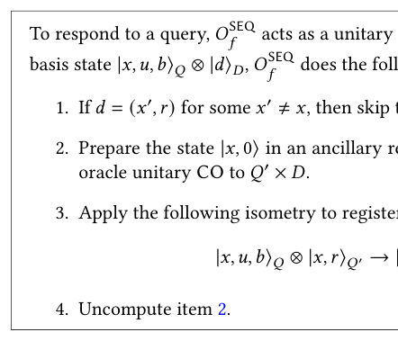
<figcaption class="paper-figure-caption"><b>Fig 1.</b> Figure 1: Querying the SEQ Oracle 𝑂SEQ 𝑓</figcaption>
</figure>
<figure class="paper-figure-card">
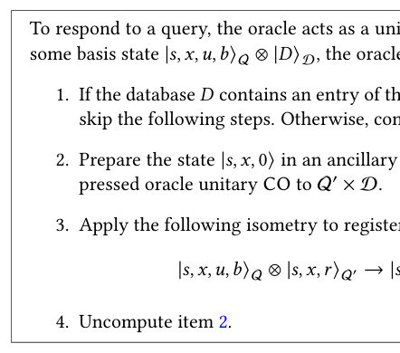
<figcaption class="paper-figure-caption"><b>Fig 2.</b> Figure 2: The SEQ Oracle 𝑂𝑆𝐸𝑄 𝑓</figcaption>
</figure>
<figure class="paper-figure-card">
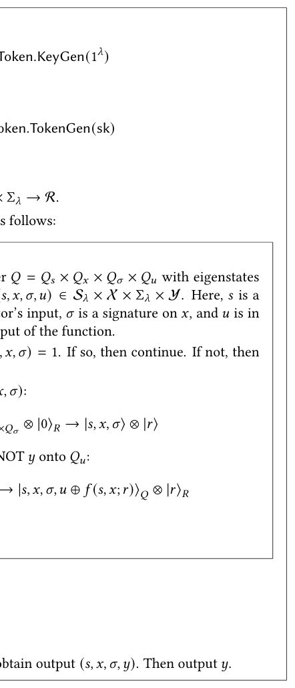
<figcaption class="paper-figure-caption"><b>Fig 3.</b> Figure 3: Generalized One-Time Program Compiler Construction</figcaption>
</figure>
<figure class="paper-figure-card">
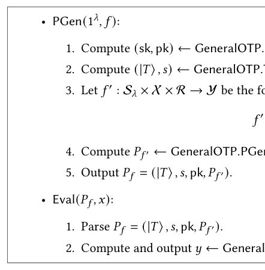
<figcaption class="paper-figure-caption"><b>Fig 4.</b> Figure 4: Construction of a One-Time Program Compiler for F</figcaption>
</figure>
<figure class="paper-figure-card">
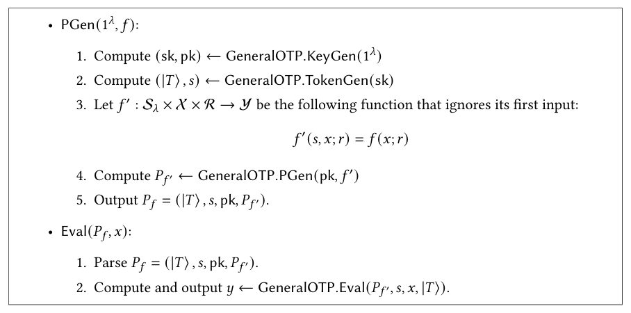
<figcaption class="paper-figure-caption"><b>Fig 5.</b> Figure 4 constructs the OTP compiler for F formally. Let GeneralOTP.(KeyGen, TokenGen, PGen, Eval) be the generalized OTP compiler constructed in fig. 3, where SigToken is instantiated with a one-time signature token scheme (definition 3.5). Additionally, for every 𝑓∈F , let 𝑓: X × R →Y.</figcaption>
</figure>
</div>

<p><strong>Summary.</strong> This paper advances the theory of quantum one-time computation by introducing Query-Limited RAM Programs (QLPs). QLPs extend stateless OTPs to support structured, stateful computation while preventing state manipulation. This work is significant for developing quantum tokens and secure delegation mechanisms for quantum computation.</p>
<p><strong>Why it may be interesting.</strong> While highly theoretical, the concepts of controlled quantum access and stateful computation are fundamental to designing secure quantum protocols for future quantum computing infrastructure.</p>
<details>
<summary>Detailed structure</summary>
<p><strong>Main problem.</strong> The paper addresses the need to extend the stateless nature of Quantum One-Time Programs (OTPs) to support richer, stateful, and controlled computation paradigms.</p>
<p><strong>Main result.</strong> They introduce Query-Limited RAM Programs (QLPs), demonstrating that one-shot programs generically imply QLPs, enabling applications like quantum tokens for TMs whose size depends only on code length.</p>
<p><strong>Method.</strong> The authors develop a unified framework by generalizing OTPs into QLPs, which are constructed by unifying one-shot signatures with the single effective query paradigm.</p>
<p><strong>Model / system.</strong> The core models are Quantum One-Time Programs (OTPs) and the proposed Query-Limited RAM Programs (QLPs), which generalize the concept of one-time computation to support stateful access control.</p>
<p><strong>Key observables.</strong> Controlled access, prevention of adversarial forking or rollback, and the dependence of token size on code length rather than runtime.</p>
<p><strong>Important parameters / regimes.</strong> The degree of statefulness (stateless vs. stateful), the number of queries allowed, and the security strength derived from one-shot signatures.</p>
<p><strong>Assumptions / limitations.</strong> The security proofs rely on the existence and properties of one-shot signatures and the ability to construct QLPs from these primitives.</p>
<p><strong>Figures summary.</strong> No specific figure summaries are available, but the notes mention conceptual protocols (e.g., Figure 16) illustrating the semi-quantum QLP protocol.</p>
<p><strong>Paper structure.</strong> The paper progresses by first identifying the limitation of stateless OTPs, then introducing QLPs as a generalization, and finally proving the relationship between one-shot signatures and QLPs through construction and implication proofs.</p>
</details>
<details>
<summary>Abstract</summary>
<p>Quantum one-time programs (Broadbent, Gutoski and Stebila, CRYPTO 2013) or OTPs for short, enable a functionality to be encoded into a quantum token that can be evaluated on a single chosen input and then becomes unusable. While powerful, this primitive is inherently stateless and tied to a setting in which a quantum token needs to be issued and distributed for every single evaluation of a circuit. This raises a natural question: can the one-time computation paradigm be extended to richer, stateful forms of controlled access, and would such an extension offer inherent advantages beyond standard OTPs?   We introduce $\textit{query-limited RAM programs}$ (QLPs), a RAM-generalization of QOTPs that supports structured, stateful computation under bounded or policy-driven access. QLPs allow controlled sequences of evaluations while preventing adversarial forking or rollback of computational state. This enables new applications beyond stateless one-time programs, including quantum tokens for Turing Machines whose size depends only on $\textit{code length}$ (and not runtime), transferable $k$-time or budget-limited programs, and low-communication mechanisms for delegating computation in settings such as Software-as-a-Service.   To construct QLPs, we introduce $\textit{one-shot programs}$, unifying one-shot signatures (Amos, Georgiou, Kiayias and Zhandry, STOC 2020) with the single effective query paradigm (Gupte, Liu, Raizes, Roberts and Vaikuntanathan, STOC 2025). We prove that one-shot programs generically imply query-limited programs, demonstrating that the strengthened unclonability guarantees of one-shot signatures translate into enhanced functionality. Along the way, we clarify the relationship between signature-token primitives and quantum one-time programs via generic constructions, essentially showing that one-time signing programs imply one-time general computation.</p>
</details>
<p><sub><a href="#top">↑ back to top</a></sub></p>

<p><a id="paper-2609.38915"></a></p>
<h3 id="semi-quantum-cryptography-with-certified-deletion"><a href="http://arxiv.org/abs/2609.38915v1">Semi-Quantum Cryptography with Certified Deletion</a></h3>
<p><strong>Authors:</strong> Yael Tauman Kalai, Justin Raizes<br>
<strong>Type:</strong> theory · <strong>Category:</strong> quantum information and computing · <strong>PDF:</strong> <a href="https://arxiv.org/pdf/2609.38915v1">https://arxiv.org/pdf/2609.38915v1</a><br>
<strong>Analysis basis:</strong> full PDF text, analyzed in chunks
<strong>Topic relevance:</strong> <code>quantum measurements</code> <strong>2/5</strong></p>
<div class="figure-strip-hint">↔ Scroll figures horizontally</div>
<div class="paper-figures-scroll">
<figure class="paper-figure-card">

<figcaption class="paper-figure-caption"><b>Fig 1.</b> Low-resolution page preview, page 2</figcaption>
</figure>
<figure class="paper-figure-card">

<figcaption class="paper-figure-caption"><b>Fig 2.</b> Low-resolution page preview, page 3</figcaption>
</figure>
<figure class="paper-figure-card">

<figcaption class="paper-figure-caption"><b>Fig 3.</b> Low-resolution page preview, page 4</figcaption>
</figure>
<figure class="paper-figure-card">

<figcaption class="paper-figure-caption"><b>Fig 4.</b> Low-resolution page preview, page 5</figcaption>
</figure>
<figure class="paper-figure-card">

<figcaption class="paper-figure-caption"><b>Fig 5.</b> Low-resolution page preview, page 6</figcaption>
</figure>
</div>

<p><strong>Summary.</strong> This work presents a general compiler for achieving publicly verifiable certified deletion in quantum cryptography, allowing quantum ciphertexts to be uploaded using only classical communication. It extends these capabilities to include non-destructive auditing (PoNI) and simultaneous data retrieval while ensuring deletion. The research is significant for building practical, robust quantum cryptographic primitives based on established hardness assumptions.</p>
<p><strong>Why it may be interesting.</strong> While focused on classical communication and LWE, the underlying techniques for state preparation, verification, and security proofs are highly relevant to understanding the practical limits and security guarantees of quantum information protocols.</p>
<details>
<summary>Detailed structure</summary>
<p><strong>Main problem.</strong> The paper addresses the challenge of creating a general compiler for publicly verifiable certified deletion in quantum cryptography, enabling the initial upload of quantum ciphertexts using only classical communication.</p>
<p><strong>Main result.</strong> The authors provide a compiler assuming the post-quantum hardness of LWE, allowing for certified deletion, non-destructive auditing (PoNI), and simultaneous data retrieval/deletion protocols.</p>
<p><strong>Method.</strong> The core method involves developing a classical-communication protocol and simulation technique to adapt purification-based security arguments for BB84-style states prepared through classical interaction.</p>
<p><strong>Model / system.</strong> The model involves quantum states (specifically BB84-style states) representing quantum ciphertexts stored on a quantum server, secured by assumptions on the hardness of LWE.</p>
<p><strong>Key observables.</strong> Certified deletion compliance, Proof of No Intrusion (PoNI) success, and the ability to verify deletion while retrieving data.</p>
<p><strong>Important parameters / regimes.</strong> The security relies on the post-quantum hardness of LWE in the plain model.</p>
<p><strong>Assumptions / limitations.</strong> The primary assumption is the post-quantum hardness of LWE, and the technical contribution addresses the difficulty of applying purification arguments when the classical transcript uniquely determines the prepared state.</p>
<p><strong>Paper structure.</strong> The paper builds from establishing the general compiler for certified deletion (Theorem 1) to detailing the specific mechanisms for PoNIs and the interactive classical protocol for simultaneous retrieval and deletion (Dec-Del).</p>
</details>
<details>
<summary>Abstract</summary>
<p>Certified deletion allows a client to upload encrypted data to a server as a quantum state, then later request that the server delete their data and detect whether the server complies. If verification passes, then the data on the server will remain hidden even if the decryption key is later leaked. In publicly verifiable certified deletion, the verification key is published so that anyone may check for deletion compliance.   In this work, we give a general compiler to publicly verifiable certified deletion that allows the client to initially upload the <em>quantum</em> ciphertext using purely <em>classical</em> communication, assuming the post-quantum hardness of LWE in the plain model. Our approach can be applied to a wide variety of primitives, including commitments and public-key, attribute-based, identity-based, and fully-homomorphic encryption.   Moreover, our constructions allow the client to classically manage the encrypted data beyond just verifying its deletion. The classical client may non-destructively audit the ciphertext via a Proof of No Intrusion to check whether it has been leaked to a third party. The classical client may also retrieve the data while simultaneously verifying its deletion from the server. Thus, they do not have to choose between retrieving the data and protecting it against future key leakage.   As our core technical contribution, we give a classical-communication protocol and simulation technique that allows adapting purification-based security arguments for BB84-style states which are prepared through classical interaction. It makes the required purification available in a hybrid experiment, despite the classical transcript uniquely determining the prepared state in a real execution.</p>
</details>
<p><sub><a href="#top">↑ back to top</a></sub></p>

<p><a id="paper-2609.38740"></a></p>
<h3 id="sign-problem-and-criticality-in-world-line-quantum-monte-carlo-methods"><a href="http://arxiv.org/abs/2609.38740v1">Sign problem and criticality in world-line quantum Monte Carlo methods</a></h3>
<p><strong>Authors:</strong> Rubem Mondaini, Richard T. Scalettar<br>
<strong>Type:</strong> theory · <strong>Category:</strong> statistical mechanics · <strong>PDF:</strong> <a href="https://arxiv.org/pdf/2609.38740v1">https://arxiv.org/pdf/2609.38740v1</a><br>
<strong>Analysis basis:</strong> full PDF text, analyzed in chunks
<strong>Topic relevance:</strong> <code>analog quantum simulation</code> <strong>2/5</strong></p>
<div class="figure-strip-hint">↔ Scroll figures horizontally</div>
<div class="paper-figures-scroll">
<figure class="paper-figure-card">

<figcaption class="paper-figure-caption"><b>Fig 1.</b> FIG. 1. Exact average sign ⟨S⟩B for noninteracting spinless fermions on a one-dimensional ring at half filling (N = L/2 is even). (a) Temperature dependence for different system sizes. The inset shows the crossover temperature T×, defined by ⟨S⟩B = 1/2, as a function of 1/L; its linear extrapolation demonstrates that T×(L) →0 in the thermodynamic limit. (b) System-size dependence at fixed temperatures. (c) Col- lapse of the exact results as a function of the scaling variable LT/vF. The horizontal dotted line denotes ⟨S⟩B = 1/2, while the vertical dashed line marks the asymptotic crossover value LT×/vF = 1.1397 ≃ π 2 ln 4. Lines and symbols are exact re- sults without Monte Carlo uncertainty.</figcaption>
</figure>
<figure class="paper-figure-card">

<figcaption class="paper-figure-caption"><b>Fig 2.</b> FIG. 2. Half-filled square lattice at t∆τ = 0.05. (a) Hard- core-boson superfluid density from winding-number fluctu- ations. The dashed curve is the universal-jump condition ρs = 1/(πβt), and the inset shows the analysis of Eq. (4) yield- ing βBKTt ≃1.460. (b) Average fermion sign. Solid curves are reconstructed by thermodynamic integration; filled sym- bols are direct estimates resolved by more than two standard errors, whereas open symbols are unresolved. The dotted line marks the BKT estimate from panel (a).</figcaption>
</figure>
<figure class="paper-figure-card">

<figcaption class="paper-figure-caption"><b>Fig 3.</b> FIG. 3. Finite-size sign residuals R(S) L = ln⟨S⟩B,L − 1 4 ln⟨S⟩B,2L obtained from thermodynamic integration at t∆τ = 0.05 where ∆τ is the discretization interval of imag- inary time. See SM. (a) Inverse-temperature dependence for different size pairs (L, 2L). Filled symbols show the thermodynamic-integration estimates, while open symbols show direct-sign estimates where statistically resolved. The vertical dotted line marks the independent stiffness estimate βBKTt = 1.460. (b) Residuals interpolated to βBKT and plotted against 1/ ln(L/L0). The solid line is a leading- logarithmic fit for L ≥8, with L0 = 0.375(14) fixed by the stiffness analysis [Fig. 2], yielding R∗= −1.04(7). The shaded...</figcaption>
</figure>
</div>

<p><strong>Summary.</strong> This work tackles the sign problem in world-line QMC by showing that phase transition physics remains encoded in the average sign of the weights. By employing thermodynamic integration and finite-size scaling, the authors successfully locate the BKT transition in 2D and characterize crossovers in 1D, providing a powerful diagnostic tool for quantum many-body physics.</p>
<p><strong>Why it may be interesting.</strong> The techniques developed for extracting critical information from the sign problem are highly relevant for studying quantum phase transitions in strongly correlated systems where direct simulation is impossible.</p>
<details>
<summary>Detailed structure</summary>
<p><strong>Main problem.</strong> The paper investigates the temperature- and size-dependence of the sign problem in world-line Quantum Monte Carlo methods, specifically how phase-transition information can be extracted even when direct sampling fails.</p>
<p><strong>Main result.</strong> The average sign ($\langle S 
angle_B$) successfully encodes phase transition information, allowing the location of the Kosterlitz-Thouless (BKT) transition in 2D and characterizing finite-size crossovers in 1D via thermodynamic integration techniques.</p>
<p><strong>Method.</strong> The authors employ world-line QMC updates and utilize thermodynamic integration (TI) to reconstruct free-energy differences ($\Delta f$) from the average sign, bypassing direct statistical limitations.</p>
<p><strong>Model / system.</strong> The study compares non-interacting spinless fermions to a reference hard-core-boson model on a lattice (1D ring and 2D square lattice). The Hamiltonian involves hopping terms ($t$) for both species.</p>
<p><strong>Key observables.</strong> Average Sign ($\langle S 
angle_B$), Superfluid Density ($
ho_s$), Free-Energy Density Difference ($\Delta f$), and the finite-size sign residual ($R(S)_L(eta)$).</p>
<p><strong>Important parameters / regimes.</strong> Temperature ($T$) and lattice size ($L$), particularly near the critical temperature ($T_{BKT}$).</p>
<p><strong>Assumptions / limitations.</strong> The analysis assumes that the free energy of the fermionic system remains analytic even if the average sign is not directly measurable, allowing the use of TI.</p>
<p><strong>Figures summary.</strong> Figures illustrate the superfluid density and average fermion sign vs. temperature, and show the finite-size sign residuals ($R(S)_L$) confirming the leading-logarithmic approach to a critical constant.</p>
<p><strong>Paper structure.</strong> The paper first establishes the general principle of encoding phase transitions in the sign problem. It then details the 1D case using boundary condition ratios, followed by the 2D case where thermodynamic integration and finite-size scaling are used to locate the BKT transition.</p>
</details>
<details>
<summary>Abstract</summary>
<p>Discussions of the sign problem usually focus on its role as the primary limitation of the applicability of quantum Monte Carlo methods for reliably solving quantum many-body models. Its behavior as a function of spatial lattice size, doping, temperature, and interaction strengths has been carefully characterized within the determinant quantum Monte Carlo algorithm. Here, we consider the much less well-explored question of the temperature- and size-dependence of the sign problem in the world-line quantum Monte Carlo method. We review how, in this algorithm, even sampling the partition function of free fermions yields a sign problem, which we connect to non-analytic behavior in the corresponding reference model, hard-core bosons on a lattice. The latter exhibits a finite-temperature Kosterlitz-Thouless phase transition in 2D, and we show how this non-analytic behavior is imprinted on the average sign of the weights for the corresponding free fermion 2D tight-binding model. Our results thus show how phase-transition information can remain encoded in the sign problem even after direct sign sampling becomes impractical.</p>
</details>
<p><sub><a href="#top">↑ back to top</a></sub></p>

<p><a id="paper-2609.39393"></a></p>
<h3 id="spectrally-selective-charging-of-an-interacting-quantum-battery-via-an-anharmonic-mediator"><a href="http://arxiv.org/abs/2609.39393v1">Spectrally Selective Charging of an Interacting Quantum Battery via an Anharmonic Mediator</a></h3>
<p><strong>Authors:</strong> Sujay Mondal, Anumita Mukhopadhyay, Siddhartha Dutta, Abhijit Bandyopadhyay<br>
<strong>Type:</strong> theory · <strong>Category:</strong> statistical mechanics · <strong>PDF:</strong> <a href="https://arxiv.org/pdf/2609.39393v1">https://arxiv.org/pdf/2609.39393v1</a><br>
<strong>Analysis basis:</strong> full PDF text, analyzed in chunks
<strong>Topic relevance:</strong> <code>Keldysh / 2PI / non-Gaussian methods</code> <strong>1/5</strong> · <code>Tavis-Cummings &amp; cavity-many-emitter</code> <strong>1/5</strong> · <code>analog quantum simulation</code> <strong>1/5</strong> · <code>correlated / nonlocal dissipation</code> <strong>1/5</strong> · <code>driven-dissipative phase transition</code> <strong>1/5</strong> · <code>methods for driven-dissipative</code> <strong>1/5</strong> · <code>non-equilibrium universality</code> <strong>1/5</strong> · <code>quantum measurements</code> <strong>1/5</strong> · <code>scars &amp; prethermalization</code> <strong>1/5</strong></p>
<div class="figure-strip-hint">↔ Scroll figures horizontally</div>
<div class="paper-figures-scroll">
<figure class="paper-figure-card">

<figcaption class="paper-figure-caption"><b>Fig 1.</b> Figure 1: Mediator-assisted charging cycle. (i) The working system S is thermalized at fixed control ξh. (ii) An isolated finite-time expansion drives ξh →ξc over a duration τe. (iii) At fixed ξc, the nonequilibrium resource generated in S is coherently transferred to the interacting two-qubit battery B through the three-level mediator M. (iv) The working system is isolated and compressed back to ξh, after which rethermalization restores its initial Gibbs state.</figcaption>
</figure>
<figure class="paper-figure-card">

<figcaption class="paper-figure-caption"><b>Fig 2.</b> Figure 2: Finite-time resource generation during expansion. (a) Nonadiabatic transition probability Pe, (b) coherence C(e) S in the final energy basis, (c) working-system energy change ∆Ee = E(e) S −E(h) S , and (d) ergotropy We versus expansion duration τe. The initial Gibbs state has β = 5 and ξh = 4, and the different curves correspond to the indicated values of (∆S, ξc).</figcaption>
</figure>
<figure class="paper-figure-card">

<figcaption class="paper-figure-caption"><b>Fig 3.</b> Fig. 2 shows the resource generated by a linear protocol, f(t/τe) = t/τe, over 0.10 ≤τe ≤10.0. Since | ˙ξ| = |ξc −ξh|/τe, short expansion times correspond to strong nonadiabatic driving, while increasing τe drives the dynamics toward the adiabatic limit [18–20]. Accordingly, short strokes produce finite Pe, coherence, and ergotropy, whereas all three are suppressed as the dynamics approaches adiabatic following. The total energy change instead approaches the finite adiabatic contribution associated with the reduction of the instantaneous gap. The expansion thus converts the initial thermal population imbalance into a controllable nonequi- librium resource for the subsequent charging stroke.</figcaption>
</figure>
<figure class="paper-figure-card">

<figcaption class="paper-figure-caption"><b>Fig 4.</b> Figure 3: Energy-level structure during the transfer stroke. The couplings J(t) and g(t) mediate sequential S–M and M–B excitation exchange. The interacting battery is charged through the symmetric ladder |00B⟩↔|B+⟩↔|11B⟩, while |B−⟩remains dark.</figcaption>
</figure>
<figure class="paper-figure-card">

<figcaption class="paper-figure-caption"><b>Fig 5.</b> Figure 4: Conditional excitation-transfer dynamics. (a) Single-excitation transfer for ρM(0) = |0M⟩⟨0M| and ρB(0) = |00B⟩⟨00B| under ω(c) S = ΩM,1 = ΩB,1. We use ωM = 1.64, ωB = 1.69, J0 = 0.20, g0 = J0/ √</figcaption>
</figure>
</div>

<p><strong>Summary.</strong> This work proposes a novel quantum battery charging cycle using a three-level mediator to mediate energy transfer from a driven working system to an interacting two-qubit battery. The authors show that by controlling the driving time, they can generate non-equilibrium resources like ergotropy, which facilitates spectrally selective, coherent charging pathways. The entire process is rigorously closed by accounting for work and heat during the cycle reset.</p>
<p><strong>Why it may be interesting.</strong> It provides a detailed, quantitative framework for understanding how non-equilibrium driving can generate usable quantum resources (like ergotropy) that are then channeled into a complex quantum system (the battery) via a structured mediator.</p>
<details>
<summary>Detailed structure</summary>
<p><strong>Main problem.</strong> The paper investigates a quantum-battery charging architecture that combines nonequilibrium resource generation with spectrally selective energy transfer.</p>
<p><strong>Main result.</strong> The scheme successfully demonstrates a complete cycle, achieving near-perfect energy balance while enabling controlled, selective charging of the battery using a mediator.</p>
<p><strong>Method.</strong> The analysis uses time-dependent quantum dynamics simulations to track energy, coherence, and ergotropy transfer across multiple coupled subsystems.</p>
<p><strong>Model / system.</strong> The system consists of a driven two-level working system (S), an interacting two-qubit battery (B), and a weakly anharmonic three-level mediator (M). The dynamics are governed by a total Hamiltonian incorporating time-dependent couplings.</p>
<p><strong>Key observables.</strong> Coherence, Ergotropy, Internal Energy ($\Delta E_X$), and the cycle-level energy balance ($\epsilon_{	ext{cyc}}$).</p>
<p><strong>Important parameters / regimes.</strong> Finite-time driving duration ($ au_e$), spectral detunings ($\delta_{SM}, \delta_{MB}$), and the anharmonicity ($\alpha_M$).</p>
<p><strong>Assumptions / limitations.</strong> The analysis relies on the mediator providing distinct transition frequencies for spectral selectivity, and the cycle closure is confirmed by tracking work and heat terms.</p>
<p><strong>Figures summary.</strong> Figures illustrate the four-step charging cycle (thermalization $  o$ expansion $  o$ transfer $   o$ compression), resource generation during expansion, resonance maps for two-excitation transfer, and the final energy balance closure.</p>
<p><strong>Paper structure.</strong> The paper details the Hamiltonian setup, analyzes resource generation during the non-equilibrium expansion stroke, maps the resonance conditions for single and two-excitation transfers via the mediator, and concludes by closing the thermodynamic cycle with compression and reset.</p>
</details>
<details>
<summary>Abstract</summary>
<p>We investigate a finite-time quantum-battery charging architecture in which a driven two-level working system transfers nonequilibrium resources to an interacting two-qubit battery through a weakly anharmonic three-level mediator. Finite-time driving generates coherence and ergotropy, while excitation-number conservation organizes the transfer into distinct dynamical sectors. The mediator then provides spectrally selective charging channels: its lower transition enables nearly complete single-excitation transfer with negligible residual mediator energy, whereas initial mediator loading activates a cross-resonant two-excitation cascade toward the doubly excited battery state. The latter exhibits a modest reduction in transfer efficiency due to the unequal collective matrix elements of the effective three-state chain. Detuning scans quantify the spectral tolerance, and the full mixed-state dynamics reveals distinct energy- and ergotropy-transfer profiles. Finite-time compression, thermal reset, and switching work close the cycle-level energy balance to numerical precision. The resulting scheme combines nonequilibrium resource generation, spectral selectivity, coherent multilevel charging, and thermodynamic cycle closure within a single architecture.</p>
</details>
<p><sub><a href="#top">↑ back to top</a></sub></p>

<p><a id="paper-2609.39735"></a></p>
<h3 id="what-makes-a-causal-loop-consistent"><a href="http://arxiv.org/abs/2609.39735v1">What makes a causal loop consistent?</a></h3>
<p><strong>Authors:</strong> Hippolyte Dourdent, Andreas Leitherer, Emanuel-Cristian Boghiu, Kyrylo Simonov, Ravi Kunjwal, Antonio Acín<br>
<strong>Type:</strong> theory · <strong>Category:</strong> other · <strong>PDF:</strong> <a href="https://arxiv.org/pdf/2609.39735v1">https://arxiv.org/pdf/2609.39735v1</a><br>
<strong>Analysis basis:</strong> full PDF text, analyzed in chunks
<strong>Topic relevance:</strong> <code>Keldysh / 2PI / non-Gaussian methods</code> <strong>1/5</strong> · <code>analog quantum simulation</code> <strong>1/5</strong> · <code>correlated / nonlocal dissipation</code> <strong>1/5</strong> · <code>driven-dissipative phase transition</code> <strong>1/5</strong> · <code>methods for driven-dissipative</code> <strong>1/5</strong> · <code>non-equilibrium universality</code> <strong>1/5</strong> · <code>quantum measurements</code> <strong>1/5</strong></p>
<div class="figure-strip-hint">↔ Scroll figures horizontally</div>
<div class="paper-figures-scroll">
<figure class="paper-figure-card">

<figcaption class="paper-figure-caption"><b>Fig 1.</b> FIG. 1. Visualization of the reduced process function as de- fined in Def. (2) for the case of fixing f1, a local operation of the first party.</figcaption>
</figure>
<figure class="paper-figure-card">

<figcaption class="paper-figure-caption"><b>Fig 2.</b> FIG. 2. Examples of three non-valid n = 3 quasi-processes structures containing (left) a local loop on A1, e.g., x1 := a1, x2 := 0, x3 := a2 ; (middle) an internal loop between A1 and A2, e.g., x1 := a2, x2 := a1, x3 := 0; (right) a global loop, e.g., the GYNI quasi-process x1 := a3, x2 := a1, x3 := a2. For each of these forbidden structures, there exists a set of local interventions that lead to a self-contradiction a1 = a1⊕1 (e.g. for f1 : x1 →a1 := x1 ⊕1, f2 : x2 →a2 := x2 and f3 : x3 → a3 := x3) or a tautology a1 = a1 (e.g. for fk : xk →ak := xk for all k).</figcaption>
</figure>
</div>

<p><strong>Summary.</strong> This paper rigorously characterizes the conditions under which a causal loop process is logically consistent by ensuring valid probability generation under local interventions. It develops and compares several mathematical criteria, ultimately establishing a simple, event-based condition equivalent to a multipartite Specker's principle. This provides a fundamental, non-recursive framework for understanding causality in complex systems.</p>
<p><strong>Why it may be interesting.</strong> While the core topic is classical causality, the rigorous mathematical machinery developed—comparing process-matrix constraints to phase-erasure conditions—is highly relevant to characterizing constraints in quantum information theory and quantum process tomography.</p>
<details>
<summary>Detailed structure</summary>
<p><strong>Main problem.</strong> The paper aims to provide a necessary and sufficient condition for a causal loop process to be logically consistent, meaning it generates valid joint probabilities under arbitrary local interventions.</p>
<p><strong>Main result.</strong> Logical consistency is characterized by a purely event-based condition: the process must form a complete list of pairwise exclusive events, which is shown to be equivalent to a multipartite form of Specker's principle.</p>
<p><strong>Method.</strong> The authors compare several mathematical criteria—including fixed point uniqueness, unipartite/output reducibility, process-matrix constraints, and phase-erasure conditions—to derive the most general and non-recursive characterization.</p>
<p><strong>Model / system.</strong> The model involves deterministic classical communication processes structured as causal loops among $N$ parties, represented by process functions $w: A 
ightarrow X$. The analysis uses tools from information theory and linear algebra applied to process matrices.</p>
<p><strong>Key observables.</strong> Logical consistency, valid joint probabilities, fixed points of induced maps, and the structure of the process matrix $W_w$.</p>
<p><strong>Important parameters / regimes.</strong> The number of parties ($N$), the set of local interventions ($f$), and the structure of the event space ($A$ and $X$).</p>
<p><strong>Assumptions / limitations.</strong> The analysis relies on the assumption that the process can be modeled by deterministic classical functions and utilizes the properties of Fourier transforms to establish equivalences between different constraint sets.</p>
<p><strong>Figures summary.</strong> Figure 1 visualizes the reduced process function $w_{f_k}$ when fixing the intervention of one party, illustrating the reduction process used in the analysis.</p>
<p><strong>Paper structure.</strong> The paper develops criteria for consistency, moving from initial necessary conditions (Fixed Point Uniqueness) to more tractable but incomplete ones (Output Reducibility), culminating in the final, complete, and intervention-free event-based characterization.</p>
</details>
<details>
<summary>Abstract</summary>
<p>Causal loops escape paradoxes if they generate valid probabilities under arbitrary independent local interventions. We show that a deterministic classical process is logically consistent if and only if it contains no signaling loops: cyclic signaling is forbidden but cyclic causation is not, allowing indefinite causal order. Logical consistency is then found to hold exactly when the list of events of a process is pairwise exclusive and complete, providing the first event-based, intervention-free, non-recursive characterization of consistent causal loops. Our results repair a previously introduced intervention-free criterion that misses global loops and reveal that what makes deterministic classical communications without causal order consistent is a multipartite form of Specker's principle: if any two of several questions can be answered jointly, so can all of them.</p>
</details>
<p><sub><a href="#top">↑ back to top</a></sub></p>

<p><a id="paper-2609.39959"></a></p>
<h3 id="haahs-3d-cubic-code-thermalizes-rapidly"><a href="http://arxiv.org/abs/2609.39959v1">Haah's 3D cubic code thermalizes rapidly</a></h3>
<p><strong>Authors:</strong> Sebastian Stengele, Libor Caha, Ángela Capel, Simone Warzel<br>
<strong>Type:</strong> theory · <strong>Category:</strong> quantum information and computing · <strong>PDF:</strong> <a href="https://arxiv.org/pdf/2609.39959v1">https://arxiv.org/pdf/2609.39959v1</a><br>
<strong>Analysis basis:</strong> full PDF text, analyzed in chunks
<strong>Topic relevance:</strong> <code>correlated / nonlocal dissipation</code> <strong>1/5</strong> · <code>driven-dissipative phase transition</code> <strong>1/5</strong> · <code>methods for driven-dissipative</code> <strong>1/5</strong> · <code>non-equilibrium universality</code> <strong>1/5</strong> · <code>scars &amp; prethermalization</code> <strong>1/5</strong></p>
<div class="figure-strip-hint">↔ Scroll figures horizontally</div>
<div class="paper-figures-scroll">
<figure class="paper-figure-card">

<figcaption class="paper-figure-caption"><b>Fig 1.</b> Figure 1: Three examples of terms in the high temperature expansion of the X-part. These are sets of checks that multiply to the identity inside the grey box.</figcaption>
</figure>
<figure class="paper-figure-card">

<figcaption class="paper-figure-caption"><b>Fig 2.</b> Figure 2: Geometry of the DS estimate with open boundaries. The box V separates U from W, and UV and V W overlap on V . The left panel illustrates open boundary conditions and the right panel illustrates periodic boundary conditions with V = V1 ⊔V2. Note that in the left panel, the length of V along the x direction is d −1.</figcaption>
</figure>
<figure class="paper-figure-card">

<figcaption class="paper-figure-caption"><b>Fig 3.</b> Figure 3: Left: an xy-slice of a box B at some non-zero z-coordinate . The red inner rectangle shows all vertices in B; the blue outer rectangle shows all checks connected to B. The teal shading marks all the checks in Sx≤2 B . Right: the xy-slice of B at z = 0. Note that the lower left corner is missing from SB, since this check acts as the identity on its upper right corner.</figcaption>
</figure>
<figure class="paper-figure-card">

<figcaption class="paper-figure-caption"><b>Fig 4.</b> Figure 5: Constraining the layer Si−1 in two steps for a fixed configuration on layer Si. This leaves at most four compatible configurations. Left: gv determines the values in the shaded violet box. We place the checks such that the circle lies on Si−1 and the dots on Si. Right: fv determines the values in the two teal boundary strips. Of the three remaining entries, s1 = Si−1(0, 1) and s2 = Si−1(1, 0) have a fixed parity imposed by f(i,1,1). This leaves at most two degrees of freedom, and hence at most four compatible configurations.</figcaption>
</figure>
<figure class="paper-figure-card">

<figcaption class="paper-figure-caption"><b>Fig 5.</b> Figure 6: An example of a path of constraints. Assuming Si has support on s, then it has to have some support in the triangle constraint. Suppose e.g. on s2. Placing a triangle constraint on s2 yields another spot where Si has support, for example on s3. Iterating this, every new site has its distance to the left and bottom boundaries reduced by at most 2. Thus there are at least ⌊r/2⌋such steps until the boundary is reached, where the triangle constraint no longer holds.</figcaption>
</figure>
</div>

<p><strong>Summary.</strong> The authors prove that Haah's 3D cubic code rapidly thermalizes at any positive temperature, settling a long-standing open question in quantum memory research. They achieve this by establishing a modified logarithmic Sobolev inequality for the system's dynamics. This result provides a rigorous, analytically derived bound on the memory time, confirming its robustness against thermal noise.</p>
<p><strong>Why it may be interesting.</strong> This work provides a major theoretical breakthrough by analytically proving rapid mixing for a key quantum error-correcting code, moving beyond previous reliance on energy barriers.</p>
<details>
<summary>Detailed structure</summary>
<p><strong>Main problem.</strong> The paper rigorously determines whether Haah's 3D cubic code, a candidate for a self-correcting quantum memory, thermalizes rapidly at any positive temperature.</p>
<p><strong>Main result.</strong> It proves that the cubic code's dynamics mix rapidly at all positive temperatures, establishing an upper bound on the passive-memory time that grows only logarithmically with system size.</p>
<p><strong>Method.</strong> The proof adapts techniques from classical spin systems, utilizing the framework of modified logarithmic Sobolev inequalities (MLSI) derived from the decay-of-correlations condition (Dobrushin-Shlosman condition).</p>
<p><strong>Model / system.</strong> The system is Haah's 3D cubic code, defined on a discrete torus, whose thermal dynamics are governed by a Lindbladian generator derived from local X and Z bath couplings.</p>
<p><strong>Key observables.</strong> Mixing time ($t_{	ext{mix}}(\epsilon)$), Modified Logarithmic Sobolev Inequality (MLSI) constant ($\alpha$), and the decay of boundary correlation quantities ($    ext{DS}_{#}$).</p>
<p><strong>Important parameters / regimes.</strong> Positive inverse temperature ($eta < \infty$), system size ($L_{\Lambda}$), and the error tolerance ($\epsilon$).</p>
<p><strong>Assumptions / limitations.</strong> The initial analysis assumes periodic boundary conditions, though the result is expected to extend to open boundary conditions.</p>
<p><strong>Figures summary.</strong> Figures illustrate the geometry used in the multiscale analysis, showing partitions of boxes ($\Sigma_B$) and the geometric setup for both periodic and open boundary conditions.</p>
<p><strong>Paper structure.</strong> The paper progresses by first establishing the general framework using the MLSI derived from the DS-condition, then developing a multiscale analysis to prove the DS-condition itself, and finally using this bound to prove the rapid mixing of the dynamics.</p>
</details>
<details>
<summary>Abstract</summary>
<p>Haah's 3D cubic code was introduced as a candidate for a self-correcting quantum memory in three dimensions, using the absence of string logical operators to obstruct thermal errors. It has been a long-standing open question whether it is a self-correcting quantum memory. Even though the memory time was explored numerically, no analytical upper bound was known. Here, we settle this question rigorously and show that the cubic code thermalizes rapidly at every positive temperature. Our proof relies on the framework of [Commun. Math. Phys. 407, 195 (2026)] to turn a decay-of-correlations condition into a modified logarithmic Sobolev inequality for the Davies generator. To the best of our knowledge, this is the first analytic proof of rapid mixing for all positive temperatures for any fracton code.</p>
</details>
<p><sub><a href="#top">↑ back to top</a></sub></p>

<p><a id="paper-2609.39255"></a></p>
<h3 id="moving-against-the-odds-with-a-cyclic-active-brownian-ratchet-current-enhancement-and-reversal"><a href="http://arxiv.org/abs/2609.39255v1">Moving against the odds with a cyclic active Brownian ratchet: current enhancement and reversal</a></h3>
<p><strong>Authors:</strong> Theo Spornhauer, Benoît Mahault, Johannes Zierenberg<br>
<strong>Type:</strong> theory · <strong>Category:</strong> statistical mechanics · <strong>PDF:</strong> <a href="https://arxiv.org/pdf/2609.39255v1">https://arxiv.org/pdf/2609.39255v1</a><br>
<strong>Analysis basis:</strong> full PDF text, analyzed in chunks
<strong>Topic relevance:</strong> <code>Frenkel-Kontorova</code> <strong>1/5</strong> · <code>Keldysh / 2PI / non-Gaussian methods</code> <strong>1/5</strong> · <code>driven-dissipative phase transition</code> <strong>1/5</strong> · <code>methods for driven-dissipative</code> <strong>1/5</strong> · <code>non-equilibrium universality</code> <strong>1/5</strong></p>
<div class="figure-strip-hint">↔ Scroll figures horizontally</div>
<div class="paper-figures-scroll">
<figure class="paper-figure-card">

<figcaption class="paper-figure-caption"><b>Fig 1.</b> FIG. 1. Quasi-one-dimensional cyclic active ratchet. (a) Ex- ample trajectory of a free cABP alternating between active and passive states. (b) Asymmetric, piecewise linear ratchet potential, periodic in x and infinitely extended along y. (c) Time series of the cyclic self-propulsion speed over a single period for different active fractions α. The dotted line in- dicates Fmax = λ−1, the force of the steep ratchet side. (d) Individual trajectories corresponding to (c). For each value of α, 10 trajectories are displayed. Decreasing α, cyclic activity can reverse the steady-state current direction. Parameters: ⟨v⟩T = 10, T = 2π10−2. In (d), tf = 5000.</figcaption>
</figure>
<figure class="paper-figure-card">

<figcaption class="paper-figure-caption"><b>Fig 2.</b> FIG. 2. Steady-state average current of cABPs in an asym- metric ratchet potential. (a) Phase diagram in the (T, α) plane highlighting regions of positive (red), zero (white) and negative (blue) currents measured from numerical simulations for fixed ⟨v⟩T = 10. The green line indicates the boundary given in Eq. (3), while the black line marks the analytical es- timate of the transition to negative current. (b) Steady-state current as a function of the driving period for several values of α. Simulation data is displayed with the colored symbols, while our analytical estimate of the negative current is shown with the continuous black line. Approximations of the current in the limiting regimes...</figcaption>
</figure>
<figure class="paper-figure-card">

<figcaption class="paper-figure-caption"><b>Fig 3.</b> FIG. 3. Current enhancement by cyclic activity. (a) Steady- state current as a function of the self-propulsion speed ¯v. Blue and orange markers show data from numerical simulations for the non-cyclic and self-averaging cyclic case (T = 2π10−4</figcaption>
</figure>
<figure class="paper-figure-card">

<figcaption class="paper-figure-caption"><b>Fig 4.</b> FIG. 4. Probability density function of the particle’s x- position in a unit-cell during the cyclic activity with period T = 2π10−2 and active fractions α = 0.1, 0.3, 0.5 from left to right. (Top row) Time evolution over two steady-state periods is displayed as kymograph plots. (Middle row) Prob- ability density at the end of the active phase averaged over five periods. (Bottom row) Probability density at the end of the passive phase averaged over five periods.</figcaption>
</figure>
</div>

<p><strong>Summary.</strong> This paper theoretically analyzes active Brownian particles moving in an asymmetric potential under periodically modulated self-propulsion. It demonstrates that this cyclic activity can enhance the directed current beyond what is expected from simple averaging, and critically, it shows that the current can be reversed by tuning the driving period. This establishes cyclic activity as a powerful tool for dynamically controlling active transport.</p>
<p><strong>Why it may be interesting.</strong> The work provides a detailed, non-equilibrium statistical mechanics framework for controlling directed motion using time-periodic driving, which has parallels in understanding energy pumping or directed transport in complex active matter systems.</p>
<details>
<summary>Detailed structure</summary>
<p><strong>Main problem.</strong> The study investigates how periodically modulating the self-propulsion of active particles in an asymmetric potential (active ratchet) affects the resulting directed transport.</p>
<p><strong>Main result.</strong> Cyclic activity can significantly enhance the rectified transport current compared to non-cyclic driving, and it can even reverse the current direction under specific conditions.</p>
<p><strong>Method.</strong> The analysis combines theoretical derivations using Fokker-Planck equations and detailed approximations for mean displacement during active and passive phases.</p>
<p><strong>Model / system.</strong> The model consists of an Active Brownian Particle (cABP) moving in two dimensions within an external, asymmetric potential V(x), subjected to a time-dependent, cyclic self-propulsion speed v(t).</p>
<p><strong>Key observables.</strong> Steady-state average current ($\langle \dot{x} \rangle$), enhancement factor ($\varepsilon$), and the conditions for current reversal.</p>
<p><strong>Important parameters / regimes.</strong> Active fraction ($\alpha$), driving period ($T$), asymmetry parameter ($\lambda$), and the mean propulsion speed ($\langle v \rangle_T$).</p>
<p><strong>Assumptions / limitations.</strong> Approximations include neglecting rotational noise in some derivations and assuming constant self-propulsion speed during the active phase.</p>
<p><strong>Figures summary.</strong> Figures illustrate the particle trajectory, the ratchet potential, and phase diagrams mapping out the regimes of positive, zero, and negative current as a function of driving parameters.</p>
<p><strong>Paper structure.</strong> The paper first analyzes the non-cyclic ratchet current using the Fokker-Planck equation, then develops an approximation scheme for cyclic driving, calculating mean displacements during active and passive phases to predict current enhancement and reversal.</p>
</details>
<details>
<summary>Abstract</summary>
<p>We show that periodically modulating the self-propulsion of active particles in an asymmetric potential can both enhance rectified transport and reverse its direction, even when the propulsion speed itself never changes sign. Current enhancement results from the nonlinear response of active transport to propulsion strength, whereas current reversal emerges from the interplay between activity-induced spreading and passive relaxation. Our theoretical analysis identifies the regimes governed by these distinct rectification mechanisms and predicts the finite range of driving periods over which current reversal occurs. These results establish cyclic activity as a means of dynamically controlling rectified active transport, with potential applications to the selective sorting of active particles.</p>
</details>
<p><sub><a href="#top">↑ back to top</a></sub></p>

<p><a id="paper-2609.40146"></a></p>
<h3 id="quloc-photonic-quantum-assisted-low-rank-llm-compression"><a href="http://arxiv.org/abs/2609.40146v1">QuLoC: Photonic Quantum-Assisted Low-Rank LLM Compression</a></h3>
<p><strong>Authors:</strong> Xiao-Hui Ni, Yu-Han Yao, Yu-Ze Zhu, Hang Song, Xiang Zhao, Lin Yang, Xian-Min Jin<br>
<strong>Type:</strong> both · <strong>Category:</strong> quantum information and computing · <strong>PDF:</strong> <a href="https://arxiv.org/pdf/2609.40146v1">https://arxiv.org/pdf/2609.40146v1</a><br>
<strong>Analysis basis:</strong> full PDF text, analyzed in chunks
<strong>Topic relevance:</strong> <code>QC/QI experiment</code> <strong>1/5</strong> · <code>analog quantum simulation</code> <strong>1/5</strong> · <code>methods for driven-dissipative</code> <strong>1/5</strong> · <code>quantum measurements</code> <strong>1/5</strong> · <code>quantum optics experiment</code> <strong>1/5</strong></p>
<div class="figure-strip-hint">↔ Scroll figures horizontally</div>
<div class="paper-figures-scroll">
<figure class="paper-figure-card">

<figcaption class="paper-figure-caption"><b>Fig 1.</b> Figure 1: Photonic quantum-assisted low-rank compression of large language models. (a) A pro- grammable photonic quantum processor produces photon-counting statistics that form a reusable bank of quantum response features Ms(ϕ). (b) These responses are converted by lightweight classical mappings into input-independent low-rank gates, which modulate the compressed projection factors during training. Layer-wise reconstruction and teacher–student distillation align the gated student with the original model. After optimization, the gates are folded into the low-rank factors, enabling fully classical inference without quantum-hardware access.</figcaption>
</figure>
<figure class="paper-figure-card">

<figcaption class="paper-figure-caption"><b>Fig 2.</b> Figure 2: Architecture of the double-Clements single-photon feature circuit used in each compressed projection module. An input-independent phase encoding is processed by two cascaded trainable Clements interferometer meshes, separated by a trainable inter-mesh phase layer. The photon-number probabilities at the output modes form the feature vector used to generate the low-rank channel gates. The gate, up, and down projection modules employ independent copies of this circuit.</figcaption>
</figure>
<figure class="paper-figure-card">

<figcaption class="paper-figure-caption"><b>Fig 3.</b> Figure 3: Convergence of the Stage I local reconstruction loss for the four compressed MLPs in the last four Transformer blocks of Qwen3.5-4B. Each curve reports Llocal for one target layer. Lower values indicate better local reconstruction.</figcaption>
</figure>
<figure class="paper-figure-card">

<figcaption class="paper-figure-caption"><b>Fig 4.</b> Figure 4: Stage II optimization with and without Stage I local reconstruction. Panels (a)–(c) show the total, CE, and KD losses, respectively, where LE2E = 0.5LCE + 0.5LKD. Faint and solid curves denote step-wise losses and 25-step moving averages, respectively.</figcaption>
</figure>
<figure class="paper-figure-card">

<figcaption class="paper-figure-caption"><b>Fig 5.</b> Figure 3 shows that the local reconstruction loss decreases consistently for all four target layers. Most of the reduction occurs during the early optimization steps, followed by slower convergence toward the end of Stage I. The layers converge to different loss levels, indicating that their sensitivity to low-rank replacement is layer dependent. Nevertheless, the consistent reduction across all four layers confirms that Stage I adapts each compressed MLP toward the input–output mapping of its uncompressed counterpart.</figcaption>
</figure>
</div>

<p><strong>Summary.</strong> This paper introduces QuLoC, a novel method for compressing large language models by using photonic quantum circuits to generate trainable gating coefficients. These gates modulate the low-rank components during training, allowing the resulting model to achieve state-of-the-art performance gains on classical hardware. It bridges quantum computation with practical AI deployment challenges.</p>
<p><strong>Why it may be interesting.</strong> It provides a concrete, applied example of integrating quantum computation (photonic circuits) into a classical machine learning optimization loop (LLM compression), demonstrating a pathway for quantum-enhanced AI hardware acceleration.</p>
<details>
<summary>Detailed structure</summary>
<p><strong>Main problem.</strong> The primary challenge is efficiently deploying large language models (LLMs) by compressing their parameters while minimizing the degradation of downstream performance.</p>
<p><strong>Main result.</strong> The proposed QuLoC method achieves significant relative accuracy improvements (e.g., 9.73% on Qwen3.5-4B) over state-of-the-art baselines, even when running on physical photonic quantum hardware.</p>
<p><strong>Method.</strong> QuLoC introduces a quantum-assisted training mechanism where quantum circuit outputs generate trainable gating coefficients that modulate the contributions of low-rank components during training.</p>
<p><strong>Model / system.</strong> The work applies to compressing large transformer-based LLMs (like Qwen3.5-4B and LLaMA-7B) by targeting their MLP blocks. The quantum aspect utilizes photonic quantum circuits (e.g., MZI structures) to generate quantum response features used for gating.</p>
<p><strong>Key observables.</strong> Relative improvement in average downstream accuracy, Perplexity (PPL), and the fidelity of reconstruction compared to state-of-the-art methods.</p>
<p><strong>Important parameters / regimes.</strong> The low-rank dimension ($r$), the compression ratio, and the number of compressed layers are key parameters varied in the experiments.</p>
<p><strong>Assumptions / limitations.</strong> The final, deployed model runs entirely on classical hardware, as the quantum gating coefficients are absorbed into the low-rank factors after training, eliminating the need for quantum circuits during inference.</p>
<p><strong>Figures summary.</strong> Figures illustrate the process flow: quantum circuits generate features that modulate low-rank factors during training (Stage I), followed by end-to-end knowledge distillation (Stage II). Tables summarize performance gains vs. compression depth and rank.</p>
<p><strong>Paper structure.</strong> The paper details a multi-stage training process: first, local functional reconstruction using quantum-derived gates to supervise the low-rank approximation; second, end-to-end knowledge distillation to refine the model's overall behavior.</p>
</details>
<details>
<summary>Abstract</summary>
<p>As LLMs grow in size, compression becomes increasingly important for efficient deployment. SVD-based low-rank compression reduces parameter counts but can degrade downstream performance. To improve performance after compression, we introduce QuLoC, a photonic quantum-assisted LLM compression algorithm that uses quantum circuit outputs to gate the retained low-rank components during training. Model performance is recovered through local functional reconstruction followed by end-to-end knowledge distillation. After training, the gating coefficients are absorbed into the low-rank factors, allowing the compressed model to run on classical hardware without executing quantum circuits during inference. Experiments on Qwen3.5-4B show that QuLoC achieves a 9.73\% relative improvement in average accuracy over state-of-the-art baselines across multiple downstream tasks, demonstrating its effectiveness. We further evaluate QuLoC on LLaMA-7B at different parameter compression ratios. It consistently achieves higher average downstream accuracy than state-of-the-art baselines, supporting its applicability to a larger model across different compression settings. Notably, experiments using the photonic quantum hardware retain these benefits with a small accuracy loss relative to simulation, suggesting robustness to hardware noise. These results motivate further exploration of photonic quantum-assisted compression for larger models and more complex agentic tasks.</p>
</details>
<p><sub><a href="#top">↑ back to top</a></sub></p>
<hr>
<p>
<a href="index.html">← Index</a>
 · <a href="papers_07.html">← Previous</a> · <a href="papers_09.html">Next →</a>
</p>
<hr>

</body>
</html>
